Annual Report of the Mysore Archaeological Department for the year 1936
Reading this page
p. 23 is the page number printed in the volume; PDF 391 is that page's place in the scanned PDF, the page to open in the source scan. The badge at the bottom right shows the page you are reading as you scroll: click it to show printed or PDF numbers, or both, and to jump to a page. ↑ Top takes you back to the start.
Footnotes are gathered at the end of the report, each with its printed page and number. Plates stand where the report binds them, at the end of the paragraph they interrupt; All plates, at the foot of the contents, shows them together.
Part I: Administrative
Staff; Tours; Exploration and Conservation; Epigraphy; Manuscripts; Numismatics; Publications; Visitors; Director-General
There was no important change in the staff. Dr. M. H. Krishna. M.A., D. Lit. (Lond.) continued to be the Director of Archaeology in addition to his professorial duties at the University.
Staff. The Director toured in the Yeđatore taluk of the Mysore District, Arkalgūd, Hāssan, Saklēšpur and Bēlūr taluks of the Hāssan District, Mūđgere, Chikmagalūr and Koppa taluks of the Kađūr District and the Tīrthahalli, Nagar and Shimoga taluks of the Shimoga District for the purpose of studying the archaeology of the Malnāđ tracts, for collecting epigraphs and information about architecture and for inspecting the monuments for conservation purposes. The Assistant to the Director toured in the Gunđlupet and Nanjangūđ taluks of the Mysore District, Hāssan and Bēlūr taluks of the Hāssan District, the Madhugiri and Kunigal taluks of the Tumkur District and the Channapatṇa taluk of the Bangalore District mainly for the study and collection of inscriptions.
Exploration and Conservation.
Among the ancient sites studied were Manjarābād, Angađi, Mēlige and Nagar. The conservation of monuments was attended to and the work of conserving the temples at Bēlūr and Halēbiđ was pushed on with the co-operation of the Public Works Department and of the Committee appointed by Government for the renovation of these two temples.
Epigraphy.
The total number of inscriptions collected during the year was about seventy. A good number of these have been edited by Mr. R. Rama Rao. the Assistant with the help of the Pandits and under the guidance of the Director. Among the important finds may be mentioned a rare copper plate grant of the ancient Punnāđ dynasty and an interesting Kadamba inscription (found at Halmiđi, Bēlūr taluk) of about the middle of the 5th century A. D. in the Kannađa language. The latter is the earliest authentic lithic record in Kannađa now extant.
1
An interesting manuscript obtained for study during the year is an English translation of the 'Memoirs of Hyder Ally from the year 1758 to 1770' by Eloy Joze Correa Peripoto, a Portugese in Hyder's service. The work of copying it has been taken in hand. Another manuscript studied during the year is an account of the early Mysore kings obtained from Tumkur.
Manuscripts. Among the coins examined the most interesting are two sets of purānas , which are the oldest type of coins known in India and are generally considered to be more than 2,000 years old.
Numismatics. During the year the annual Reports of the department for the years 1931 and 1932 were published, that for 1933 was submitted to Government for approval, the printing of the report for 1934 was completed and the report for 1935 was prepared and sent to the press. The reports were thus brought up to date. Special acknowledgments are due to the Archæological Office staff and to the Government Central Press, Bangalore, for their co-operation in clearing the arrears. Hereafter it is hoped to publish the report for each official year in the course of the following year.
An important event for the success of which the Archæological Department contributed its whole-hearted service was the Eighth Session of the All-India Oriental Conference which was held at Mysore during the Christmas of 1935. The department took a prominent part in the Conference and in the exhibition of antiquities connected therewith and the members of the staff worked in various capacities for its success, the Director being the Local Secretary and the Secretary of the Reception Committee.
Among the distinguished visitors to the Exhibition were Amin-ul-Mulk Sir Mirza Ismail, kt. C.I.E., Dewan of Mysore, Rāja Sēvāsakta Dewan Bahadur Dr. S. Krishnaswamiengar, M.A., Ph.D., Mr. K. P. Jayaswal, M.A., Bar-at-law, and Rao Bahadur K. N. Dikshit, M.A., Deputy Director-General of Archæology in India.
In July 1935, Mr. J. F. Blakiston, the Director-General of Archæology in India, visited Haļebīd, Bēlūr, Šravanābeļagoļa, Seringapatam and Sōmanāthapur and the Archæological Office at Mysore, and gave many valuable suggestions, particularly about conservation.
Part II: Study of Ancient Monuments
Yeđatore
Arkēšvara Temple
Wooden Car; Conservation; Vighnēšvara Temple; Kaisāle-Maņtapa; Krishņarājanagara; Images
An undated inscription, No. 64 of Yeđatore taluk, Mysore District Supplement, which is in Tamil and Grantha characters and belongs probably to the time of Kulöttuñga Chōła I 1 , mentions that a certain Añkakkārān, son of Ponnāṇdān, erected a temple named Añkakkārēśvara for the god Nāyarūkilavar, lord of Aiyampolīl alias Uyyakkoṇda-Šōlapaṭṭanam in Turainādu and granted lands to it. There is no doubt that Añkakkārīśvara is the same as Arkēśvara or the sun god (Nāyarūkki-lavar) for whom the temple is built in Yeđatore.
The main shrine of Arkēśvara is very different in character from the surrounding structures. It is a small low roofed temple without a pradakshiṇā and with right-angled plain pilasters and octagonal cornices on the outside of its walls. To the south, west, and north of the garbhagriha shallow niches break the monotony. The navarañga has a porch to the south as in the Talkāđ Vaidyēśvara temple and elsewhere.
Inside the navarañga are kept relievo images of Gaṇapati, Sūrya, Mahishāsu-ramardinī, Janārdana and Bhairava. These, though rude, appear to be of old workmanship. The inside of the temple is very plain. The navarañga and its eastern doorway, however, appear to be of the Vijayanagar times.
The linga is of natural stone. The metallic image is of Sadāśivamūrti with consort.
In front of the navarañga stands a mukhamaṇṭapa of nine añkaṇas borne on tall pillars of the Vijayanagar type. The mahādvāra is high with a tall door, adoined with Gajalakshmī on the lintel and with vertical scroll bands on the jambs 2 . Around the compound runs a cloistered verandah with niches enshrining lingas at the back. To the north there is a shrine of the late Vijayanagar style, for the goddess Mīnākshī, whose image of the late Vijayanagar type is a fine one with the tōraṇa carved in the same stone.
The shrines of Kalimādhava and Chandikēśvara are also later structures architecturally unimportant.
To the north of the mahādvāra, on the inside, built into the wall are two small octagonal pillars of good workmanship. The central band of these pillars consists of
2. Cp. the Gaṅgādharēśvara temple at Serngapatam, the Tirumalanatha temple at Ālambgiri, etc., and cp. also the tower. various mouldings (vase, etc.), with ornamentations of rudrāksha. The panels contain figures of Yakshas, lions seated back to back, etc.
The pillars behind the well in the house of Kempu Rāmaṇṇa, one of which is reported 1 to have had the inscription 2 of Aṇkakkāṭa who built the original structure of the Arkēśvara temple, are now missing. It is said that the pillars were given away to some persons of Keggere by one Gopalakrishna Sastri, whose house is to the east of the temple at Kṛishnarājanagara. Since the inscription is an important one and not yet published, it must be secured.
The wooden car of the Arkēśvara temple is of about the 18th century and is full of sculptures some of which are interesting.
Wooden Car.
In recent years the temple appears to have been conserved and the prākāra walls provided with buttresses.
Conservation.
VIGHNĒŚVARA TEMPLE.
Close to the river (Pl. II, 1) on the platform above the steps is a small shrine of Vighnēśvara now having six aṇkaṇas. It appears to have been washed away during the floods of 1924 and rebuilt carelessly without any consultation of the Archaeological Department. Four of the pillars and the image, however, remain. The pillars are of the cylindrical type with brackets of the ribbed pattern 3 . The image of Vidyā-Gaṇapati also is perhaps very old. The god is seated holding tusk, goad, conch (?) and bowl of sweets. The details are not visible since they are covered over with sandal paste and dirt.
An inscription 4 of 1087 A.D. and connected with the Chōlas was engraved on three pillars all of which have now disappeared.
KAISĀLE MAŃĵAPA.
Near the large Aśvattha tree there was formerly a large manṭapa of twelve aṇkaṇas of which only a portion now remains. The original manṭapa appears to have been damaged by the floods of 1924, and the pillars and other materials were taken away to Kṛishnarājanagara for constructing the Ēśvara and other temples. An inscription of 1715 A. D. recording the construction of this manṭapa has now disappeared.
2. Mys. Dist. Suppt. 64, Epigraphia Carnatica.
3. Cp. Binnamangala.
4. Epigraphia Carnatica ; IV, Yeđatore, 2.
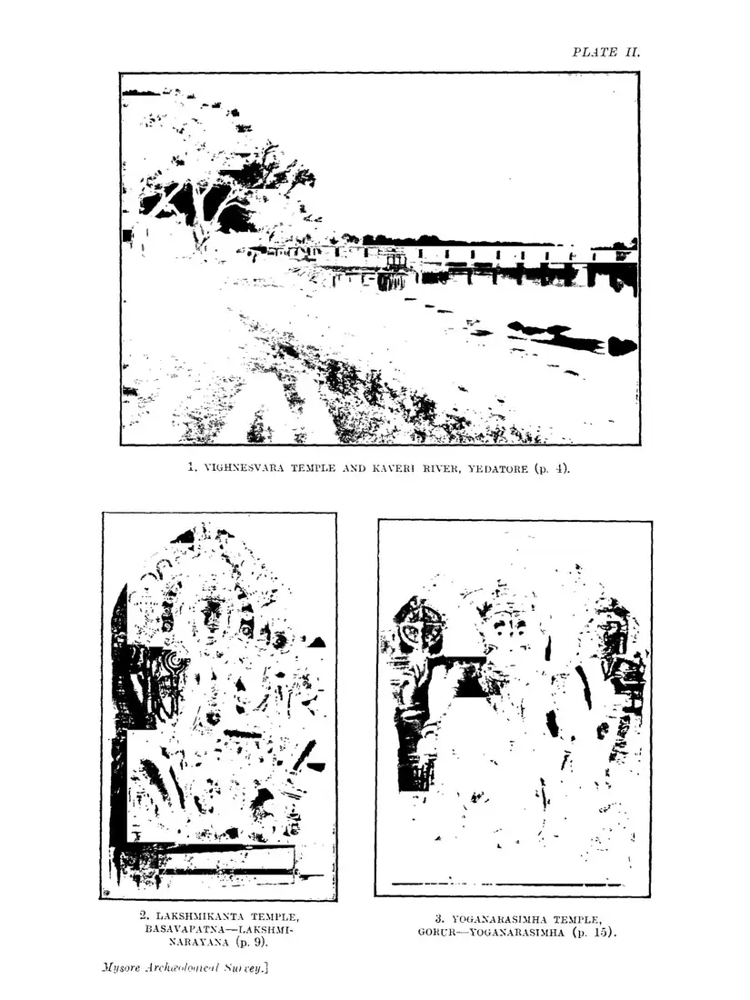
- VIGHNESVARA TEMPLE AND KAVERI RIVER, YEDATORE (p. 4)
- LAKSHMIKANTA TEMPLE BASAVAPATNA—LAKSHMI- NARAYANA (p. 9)
- YOGANARASIMHA TEMPLE GORUR—YOGANARASIMHA (p. 15)
To the north of the remains of this manṭapa is a peninsula edged by well-built steps and adorned at its north end by a stone pavilion of nine ańkaṇas constructed out of the materials of other ruined manṭapas. This manṭapa is finely situated and is expected to be almost submerged whenever the Kannambāđi dam water rises above 110 feet.
KRISHNARAJANAGARA.
In Krishṇarājanagara or New-Yeđatore, on the east face of the ridge two modern temples have been built very recently, from materials brought from the temples of the Vijayanagar period in the old town. The two temples are symmetrically placed side by side.
Of these the Chandramaulīśvara temple has a fine metallic processional image of Tāṇḍavēśvara and another of his consort. In the Nārāyaṇa temple the images of Nārāyaṇa (really Janārdana) and Lakshmī are of the middle Vijayanagar type of workmanship. In one of the cells is placed the utsavamūrti group of the Śrī Rāma temple of Chunchankaṭte, consisting of Rāma, Sītā, Lakshmaṇa and Hanumān. They are also of middle Vijayanagar workmanship, and the image of Rāma is beautifully done. These images support the view that in the days, probably, of the Tuluva emperors of Vijayanagar beautiful metallic images were being produced, though workmanship in stone was inferior to that of the earlier periods, particularly of the Hoysaḥa.
Part II: Study of Ancient MonumentsSāligrāma
Yōgā-Narasimha Temple; History; Rāmānujāchārya Temple; Jyōtirmayēšvara Temple; Ancient Course of the Kāvēri; Ancient Site; Chunchankaṭte; Rāma Temple
YÖGĀ-NARASIMHA TEMPLE.
The temple of Yögā-Narasimha is a complex structure which appears to have been constructed in two or three stages. The main cell and the sukhanāsi which are both comparatively plain except for the well-worked shallow domes of their ceilings and the inner navaraṅga of nine squares with its granite pillars of cylindrical shafts, wheel-shaped mouldings and Chōḥa type bracket capitals, are definitely old structures of the Hoysaḥa times at the latest. The central navaraṅga ceiling is also domed with a pendent flower in the centre. On the outside, the basement of the temple has five cornices separated by deep shadowy lines and the walls are ornamented with plainish right-angled pilasters bearing well-worked capitals. The general look is that of a poorly worked granite structure of the Hoysaḥa times.
The outer navaraṅga which is a large one resembles similar structures at Hoḥe-Narsipur and Toṇṇūr and has a large number, about twenty-four, of granite pillars with cylindrical shafts. But this portion of the building and also the small cloistered courtyard around the back of the temple are of Vijayanagar times, though the pillars themselves are older; while the mahādvāra, the Janārdana shrine and the many images of the Ālyārs, Rāmānujāchārya, Āṇdāl and Lakshmī kept in the temple are all definitely of the late Vijayanagar period. The image of Kēśava, however, is a Hoysalā piece, perhaps brought from some other temple. The main image of Yōgā-Narasimha is at the latest a Hoysalā piece, though with unusually light ornamentation, slim body and a natural-looking lion face. Its tōraṇa bears the usual ten avatāras. On its pedestal is a Garuḍa image.
RĀMĀNUJĀCHĀRYA TEMPLE.
The temple of Rāmānujāchārya is a very plain structure with a garbhagrīha, a sukhanāsi, and two navaraṅgas of round granite pillars, similar to those in the Narasimha temple. The first three parts appear to be Hoysalā, though the outer wall is plain. In the centre of the garbhagrīha is a pedestal of peculiar form bearing, all round, eight images of the disciples of Rāmānuja, viz. , Mudaliyāṇdān, Vaḍuganambi, Toṇṇūr-Nambi, etc. This reminds us of the pedestal of the double linga at Beṭṭadapur. On the pedestal is a panel having two relievo impressions of Rāmānuja's feet. On the back wall is a panel with the Teṅgale Śrī-Vaishnava caste-mark flanked by śankha and chakra. On the side of the sukhanāsi is an inscription Vem ka pa in Telugu characters (perhaps Venkaṭappa Nāyaka of Holē-Narsipur). The most interesting feature of this temple is the prākāra wall having a parapet of round discs as at Amṛitāpura but with plain faces.
The temple is of no architectural importance. Its value consists in its connection with Rāmānuja's name and thus its historical importance. However, since it is a Second Class monument, it ought to be kept in a better condition. The compound should be levelled and kept clean, and the Śrīpāda-tīrtha rid of its plant and properly cement-pointed. A cobra lives here.
JYÖTIRMAYĚŠVARA TEMPLE.
'Jyōtirmayēśvara' is a name more recently given to a fine temple known in the inscriptions as that of Aṅkanāthēśvara and called also Paṇabēśvara or Lord of the Bridge generally. In front of the temple is an inscription on a granite slab which appears to belong to the 14th century.
The main shrine is similar to the Narasimha temple in the look of its outer walls and its inner pillars; but in addition it has nine fine ceilings consisting of shallow domes. Numbers 1 and 9 of them are really beautiful. Further the outer front wall of this navaraṅga has a row of large images like Virabhadra, etc. The jambs have finely carved doorkeepers while the lintel has between two makaras and under a lion tōraṇa the image of Tāṇdavēsvara attended by Vishnu and Brahma. The four pillars of the navaraṅga are all round and lathe-turned ones of potstone and the wheel moulding has flying Yakshas and ṛishis. This temple is the most artistic in Sāligrāma. It may be protected and put under Class II for conservation.
To the north of the temple is a wide valley with a sandy bed which was evidently a river bed. It is possible that a branch of the Ancient course of the Kaveri. Kāvērī was flowing here and contributed to the prosperity of old Sāligrāma or Avichārapura; very probably the latter was on the river bank. These features perhaps attracted Rāmānujāchārya to the place where he is said to have stayed for twelve years. Further the name of Paṇabēsvara or Lord of the Bridge shows that this Śiva was considered to have been the guardian of the bridge or the ford across this branch of the river.
To the south-west of this temple on the high ground can be collected potsherds and iron slag pieces which indicate the site of the ancient Ancient Site. town.
CHUNCHANKATTE.
Chunchankaṭṭe is a beautiful spot in the midst of a well wooded country. The chief attraction is a series of cascades and a fall in the Kāvērī river about 30 feet high. The river cuts through a mass of bed-rock and the sight is beautiful when there is sufficient water.
RĀMA TEMPLE.
To the south of the falls on the bank is situated the temple of Śrī Rāma, which has sculptured pieces of three different periods. To the south of the eastern gate and in the south-east corner are a doorway, some pillars, two ceilings and the portion of a navaraṅga outer wall, all of soap-stone bearing definitely Hoysalā motits. like the domed ceilings, pyramidical turrets made of dentil cornices, etc. Evidently these belong to some Hoysalā temple of the 13th or 14th century and the materials of the ruin were utilised for a later structure. The images of Śrī Rāma, Lakshmaṇa and Sītā are good ones which appear to be of the Vijayanagar times. They were probably set up somewhere about 1550 or 1600 A.D. in a temple consisting of a garbhagriha, sukhanāsi, etc. The dvārapālas with their detailed carvings have a Kannaṇa inscription on the pedestal and appear to hail from the period of the old Mysore dynasty. The brick prākāra wall is a recent one, while the mahadvāra with a Garuṇa-kambha bears an inscription of Kṛishṇarāja Voḍeyar III.
On the eastern outer wall of the navaraṅga there are two old panels bearing two nāgabandha designs.
Chikkahanasōge
Ādinātha Basti; History; General Description; Conservation
ĀDINĀTHA BASTI.
Hanasōge or Panasōge appears to have been an important place in the 11th century A. D. and to have played a prominent part in the struggles between the Hoysaļa and Chōļa powers at the commencement of the 12th century. In the 11th century it must have been an important Jaina centre where dwelt an ancient line of Jaina gurus belonging to the Kundakundānvaya, Mūla-Sangha, Dēsiga-Gaṇa and Pustaka-Gachcha. The place was under the rule of the Changāļvas from the 11th century to about the 16th. Vira-rājēndra Nanni Changāļva caused to be erected the Ādinātha basadi of the Pustaka-Gachcha, 1 which was called the Rājendra-Chōļa Jina temple 2 early in the 11th century. Earlier than this date the tradition of Śrī Rāma had no doubt a strong hold on the neighbourhood of the locality since the inscriptions record that the gods of these temples were worshipped by Rāma himself. 3
The temple is a three-celled one in the pre-Hoysaļa Chāļukya style with the walls, pillars and ceilings of granite and the images and doorways of soapstone. The building is cross-shaped (Pl. III) with the main shrine of Ādinātha on the west and with Śāntinātha in the south shrine and Chandranātha in the north. Its pillars are mostly of the pre-Hoysaļa type, resembling those of the Maralēšvara temple at Tālkāđ. They are of granite and chiselled into round shapes, not lathe-turned, and show the rudiments of the various motifs, like the bell, pot and wheel which become elaborated in Hoysaļa architecture. A mukhamanṭapa of the indented square pattern leads through three beautifully carved soap-stone doorways into the navaraṅgas of the three shrines. These doorways remind us of those in the Tripurāntēšvara temple at Belgāmi and also, on a smaller scale, of the garbhagriha doorway in the Bēlūr temple. The north doorway, i.e. of the shrine of Chandranātha (also called Nēminātha) is the most elaborate and typical of these (Pl. IV, 1). The jambs have the following five vertical bands from inside out: floral scroll, floral scroll with Yakshas, sixteen-fluted round pillar, lions and gryphons, and foliage. On the lintel is a fine Gajalakshmī group flanked by the lines of a Kannađa inscription above which are a row of finely carved swans with aquatic broad beaks, and a cornice ornamented with kīrtimukhas. The other doorways are modifications of this design. The broken images of two chāmara bearers and the Yaksha and Yakshī of Ādinātha are also found in the temple. Of the three Jina images Nēminātha has a broken mulkođe instead of his
1. Epigraphia Carnatica, IV, Yeļatore 22.
2. ibid. yd. 21.
3. ibid. yd. 26.
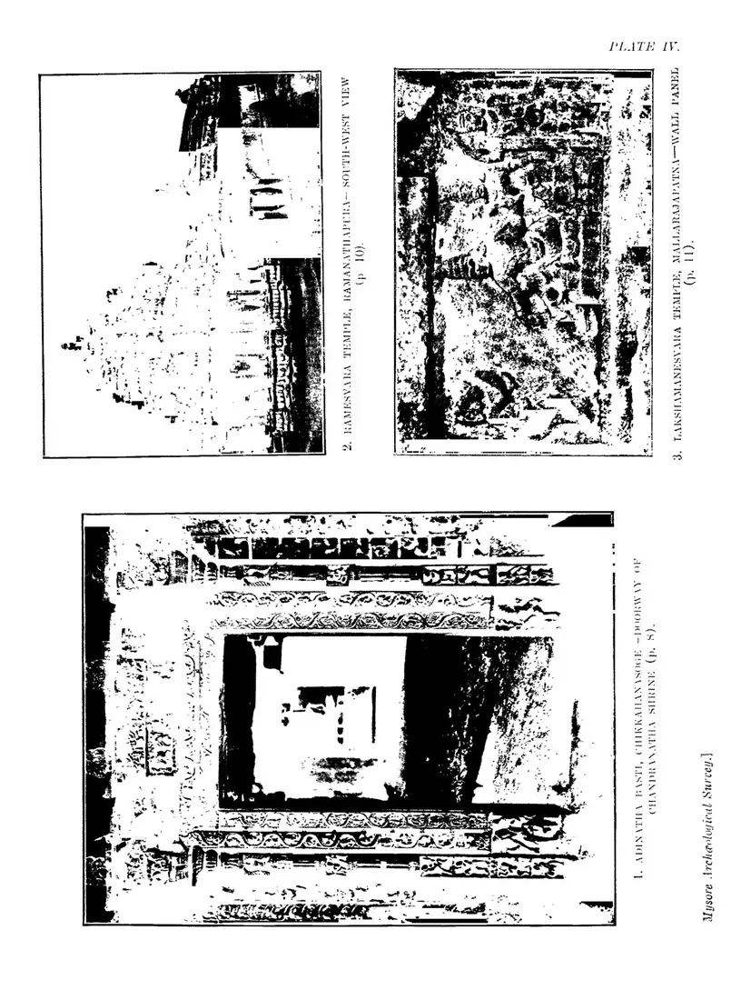
- ADIN VATA EASTI, CHIKKALANASOGE — DOORWAY OF CHANDRANATHA SHRINE (p. 8)
- RAMESVARA TEMPLE, RAMANATHAPURA — SOUTH-WEST VIEW (p. 10)
- TAKSHAMANESVARA TEMPLE, MALLARAJAPATNA — WALL PANEL (p. 11)
original tōraṇa, while Śāntinātha and Ādinātha have elaborate tōraṇas with attendants and simha-pīthas as in the Ādinātha temple at Bastihalli near Haļebīd.
The temple is in ruins and there are no Jainas at the place to conduct worship. Some Jainas may be encouraged to settle in the village and start worship with Muzrai grant so that the temple may be kept free from its present dirt and filth. Otherwise its seven images and three doorways may well be removed to a museum. Near the Ādinātha image was found kept an extraneous granite reliefo of some ruler on horseback going forth to battle, spear in hand. Since it does not belong to the temple and none knows where it came from, it may well be transferred to a museum.
The image at the so-called Chennigarāya temple, which is described by Mr. R. Narasimhachar 1 as Kēšava peculiar and identified as Kēšava is only a dvārapāla figure whose pair has now been found on the inner side of the tank bund and is said to have been recently unearthed out of the debris near a private man's house at the village. The two figures are beautifully carved and Vaishṇava in character proving the existence of a Vishṇu temple at the place at the time to which they belong, namely, about the 13th century.
Three new inscriptions of the 12th century were discovered on the tank bund of the village. They are all vīragals of the Hoysaļa period, which had been built into the tank bund.
Basavāpatna
Basavāpatṇa, on the left bank of the Kāvērī and opposite to Rudrapatṇa, is an old place, whose original name is not known. It has the remnants of an old fort with the Vishṇu and Šiva temples showing that it was very probably an old agrahāra town of the days of Rāmanātha and Narasimha of the later Hoysaļas. When it was in Rāmanātha's hands an inscription was set up in front of the Śāntīšvara temple. To the north of the Śāntīšvara temple is another Šiva temple now known as the temple of Praṇatārthiharēšvara, probably identical with Āñjanāya-Hanumantēšvara of the inscriptions. It has a stone oil mill to the south-east with an inscription. Against the south-east wall now stands a vīragal of three panels bearing two inscriptions, one recording the death of a hero when Rāmanātha, the Hoysaļa, was fighting his brother Narasimha III in 1281 A. D., and the other referring to the death of another hero while the Niđugal fort was being captured by Narasimha III ifi 1286 A. D.
Corresponding to the Šiva temple there is a Lakshmīkānta temple in the centre of the old town, with Lakshmīnārāyaṇa seated in sukhāsana. The image is a good one of the Hoysaļa period (Pl. II, 2). Close to the Śāntīšvara temple on the south stands the temple of Shadbhāvarahitēšvara with an oval and rather peculiar lingua;
2 and in the centre of the new town is the temple of Sandalēsvara. None of these temples has any ancient vestiges. Except the lingas and the Lakshmīnārāyaṇa image and the inscriptions, everything appears to be modern.
A new inscription was found near the dīpastambha of the Shaḍbhāvarahitēsvara temple among the slabs of a stone compound. The figure of a cow is carved in low relief at the bottom, which probably indicates that the inscription is of the Gaṅga period (c. 10th century A. D.).
Rāmanāthapura
Rāmēšvara Temple
Conservation
The Rāmēsvara temple (Pl. IV, 2) is the most important structure in Rāmanāthapura. It was evidently an old Hoysaļa temple to which accretions have been made in the Vijayanagar and Pāllegār periods.
The original temple is a smallish structure completely of soap-stone with a star-shaped garbhagrīha, a small sukhanāsi, a navaraṅga of nine squares and a porch (Pl. V). The outer walls are ornamented with the usual right-angled pilasters, and deep-cut cornices appear on the basement. On the south and north walls of the navaraṅga are small niches. The tower which is also of soap-stone is broad-based and low. But it is typical of the Hoysaļa style and bears on its front projection a fine group of Saļa fighting the lion. Of the original porch, only two cylindrical pillars remain, since the original front walls have been knocked down and an extension is made giving the navaraṅga eighteen squares. The pillars of the original navaraṅga are of the round lathe-turned Hoysaļa type; and the ceilings are all domed with ordinary lotus designs. The sukhanāsi doorway has perforated jambs, Umā-mahēsvara on the lintel and Gaṇēsa supported by makaras on the top panel. The garbhagrīha doorway has a Tāṇḍavēsvara group and in the garbhagrīha on a low pedestal is placed a small natural linga of dark trap stone. In the navaraṅga are kept Gaṇapati, Mahishāsuramardinī, Bhairava, Kēsava and Sūrya. The Bhairava image with its slim body is a beautiful piece of sculpture. There are also kept metallic images of a Tāṇḍavēsvara group and a Sadāśiva group. •
At a later date a further extension was made and another navaraṅga of nine ankaṇas added. In the south-west corner is the temple of Mīnākshī with an image of the late Vijayanagar period. The mahādvāra with its high ornamental granite doorway and its tall brick tower and the cloistered prākāra with the rows of linga cells at the back, of course, belong to the late Vijayanagar or early Pāllegār times.
In the south-west corner of the temple is a Vēnugōpāla group, also of the Hoysaļa period 1 .
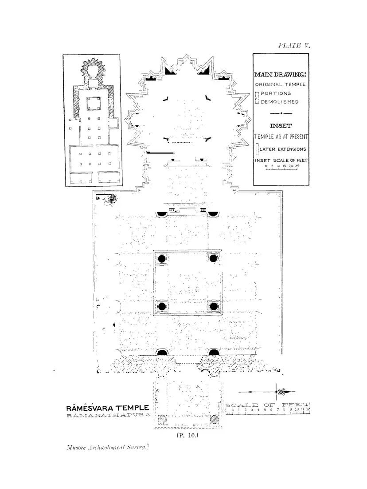
- RÂMÉSVARA TEMPLE RÂMANÁTHAPURA SCALE OF FEET 0 1 2 3 4 5 6 7 8 9 10 11 12 (p. 10)
Cited in the text: p. 10 ↩
Above the verandah is a very heavy ornamented parapet of brick and mortar of the Pāllegār times with post-Moslem designs and rows of birds, elephants, camels, etc.
The original Hoysaļa temple is a neat structure, quite intact and deserving of preservation, though it is not ornamental. This Conservation. structure as also the prākāra cells above which are inscriptions are completely covered over with a thick coat of chunān which should be carefully scraped off. The prākāra parapet is cracked in many places and out of plumb in a few. It should be examined by engineers with a view to its fitness to stand. Its heavy cornices appear to be pulling it forward.
The rocks leading to the Gōgarbha from near the Agastyēšvara temple are carved with numerous inscriptions. Of these many are published in the Epigraphia Carnatica or printed in the unpublished Supplement. A few have now been revised and several more collected and published for the first time.
Part II: Study of Ancient MonumentsMallarājapatna
Lakshmanēšvara Temple
Conservation
On the right bank of the river, opposite to the Rāmēšvara temple of Rāmanāthapur, and inside the area of Maliarājapatņa, stands the temple of LakshmaŹēšvara. Inside a modern prākāra of brick and stone work of the 18th century is a courtyard in the centre of which is an old and dilapidated temple which appears to be a granite version of the Hoysaļa style of Sōmēšvara's time. But in some respects it appears to be even earlier.
It consists of a garbhagrīha enshrining a linga of dark natural stone, a sukhanāsi and a navaranga of nine squares and four pillars having cylindrical shafts and wheel-shaped top mouldings. A small porch in front is borne on two cylindrical granite pillars. The roofs are mostly shallow domes. The basement is peculiarly bereft of the usual five cornices: but the outer wall has the thin pilasters and niches. The eaves have a particularly sharp 'S' form and a curious feature of the temple is that on the outer walls and under the small arches adorning the eaves there are a number of carved panels of sculptures in low relief among which may be mentioned the following :—
Cow and calf; Vēnugōpāla group; Hanumān presenting Rāma, Sitā and Lakshmaņa with a bunch of plantains (Pl. IV, 3); Dancing Gaņapati; Vyāghrapāda: man riding on lion; Kirātārjunīya; man riding on tiger; řishi riding on fish: Sitā sending Lakshmaņa to rescue Rāma at the hunt of Māyāmřiga; lady worshipping linga; elephant slaying man; monkey fighting cobra; ornamental kīrtinukha design formed by a pair of yāļis and a pair of swans, the latter having heads in two positions; monkey acrobatics; ram fight; linga worship; wrestlers and spectators; another ornamental niche with two lions heading each other; dancing groups; four lions revolving with a lion face in the middle; Hanumān meeting Rāma and Lakshmaṇa for the first time.
The temple is a good one deserving of preservation. It is badly overgrown with plants and is leaky. The materials are all there and the temple will have to be rebuilt from the basement upwards.
To the north of the Āūjanēya shrine on the rocks, are carved in three panels the following in relief:—
(1) A linga with Basava to its right.
(2) Standing Dēvī—two-handed; right in abhaya and left holding lotus.
(3) Four-handed Gaṇapati.
There is a defaced and illegible Nāgari inscription in front of the figures.
The Āūjanēya shrine is of brick and mortar and of recent times. The image is a small relievo in potstone and is placed on a pedestal which has on its front face the figures of two devotees with folded hands.
Part II: Study of Ancient MonumentsArkalgud
The three temples at Arkalgūd, namely, those of Lakshmī-Narasimha, Amṛitēśvara and Vīrabbadra, were mentioned in the Annual Report for 1909. They were again inspected in the year 1924 and a descriptive note has appeared in the report of the department for that year. During 1935-36 the temples were again visited, and the following further notes have been made:—
The pillars of the navaranga and two of the pillars of the mukhamaṇtapa of the Lakshmī-Narasimha temple are of the simple lathe-turned type.
Among the ceilings of this temple a minority only are flat.
It is doubtful if the temple is wholly in the Hoysaļa style. The tower, and not the temple itself, is after the Dođdagaddavalli type, that is, square and pyramidical with dentil cornices—a type which has been incorrectly attributed by some writers to the Kadambas.
While the garbhagrīha, the sukhanāsi, the navaranga and the porch are of the Hoysaļa period, the mukhamaṇtapa, the mahādvāra and the prākāra appear to be of the Pāllegār period.
The Amṛitēśvara and Lakshmī-Narasimha temples appear to belong to the same period.
The bull in front of the east entrance of the Śiva temple is much damaged.
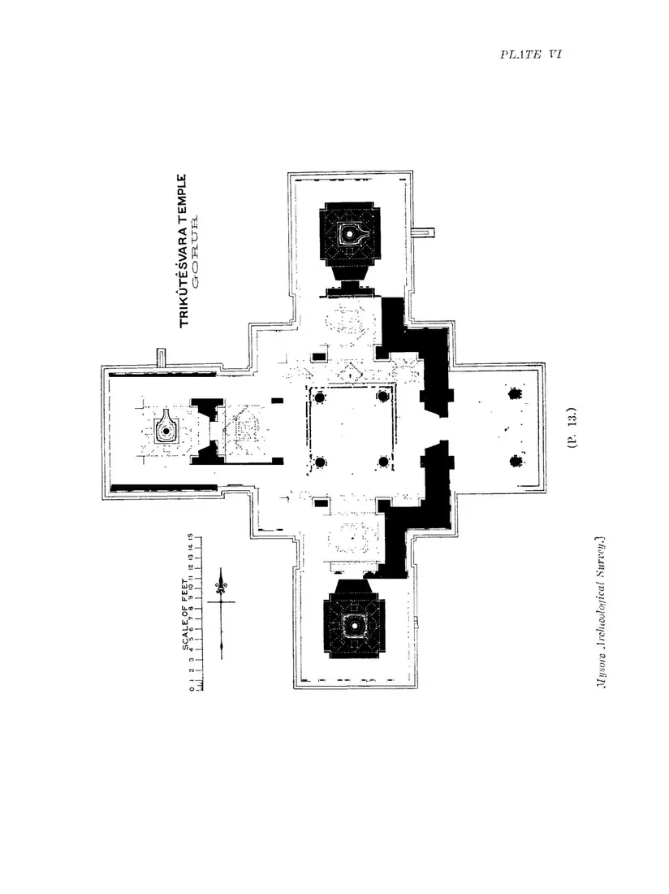
- (p. 13)
The image of Vīrabhadra inside the navaraṅga is a good specimen of Hoysaļa sculpture and is about 3½ feet high.
The Vīrabhadra temple is in a very dilapidated condition.
The original wooden car of the Lakshmī-Narasimha temple was broken about eight years ago. At the request of the people who offered more than Rs. 500, an estimate for about Rs. 1,090 is said to have been sanctioned. It is suggested that the car may be prepared early and the festival revived.
Sambhunāthapura
A note on the temple of Svayambhunāthēsvara has appeared in M. A. R. 1924, pp. 3-4. The temple stands by the side of the Hassan road and about 2 miles to the north of Arkalgūd. It is a Hoysaļa structure in the Draviđian style of a date not later than 1290 A.D. which is the real date of the inscription in front of it. In the Epigraphia Carnatica, Vol. VII, and also in M. A. R. 1924, the date has been wrongly read.
The temple has a garbhagriha, a sukhanāsi, a navaraṅga of nine squares and an outer navaraṅga of nine squares also. Its outer walls have plain octagonal cornices and at the back the usual plain pilasters. The tower is a brick structure of the Pāllegār period. The eaves have a sharp 'S' curve and at the back are ornamented with kīrtimukha arches. The outer navaraṅga pillars are round. The inner navaraṅga pillars are also round with pot—and wheel-shaped mouldings.
The outer navaraṅga seems to be a later addition of about the 14th century.
Gōrūr
Trikūṭēšvara Temple; History; General Description; Conservation; Kallēšvara Temple; Vāsudēva Temple
TRIKŪTĒSVARA TEMPLE.
Gorūr is known in the inscriptions as Goravūr and it is stated that its sacred name was Šatarudrīyapura and that it was named Vijayādityapura by Vijayāditya-Heggade who got the Trikūṭa-liņgas installed in the Trikūṭēsvara temple in the year Vyaya (1166 A.D.) when Narasimha I Hoysaļa was ruling.
The structure is a typical Hoysaļa building with three cells, three open sukhanāsis, a navaraṅga of nine squares and an open porch of one square. (Pl. VI.) The cornices are deeply cut, but not remarkable. The walls are ornamented with right-angled pilasters bearing bell-shaped mouldings, and there are no sculptures on the walls. The three towers which are intact are square in plan and formed of stepped dentil cornices which are otherwise plain. (Pl. VII, 1.) Their frontal projections have ost their Sala groups. The two pillars of the porch are cylindrical with wheel mouldings on top; while the four navaranga pillars have cubical mouldings with sixteen-fluted shafts and wheel-shaped mouldings on top. The navaranga doorway is guarded by two damaged Šaiva dvārapālas and on the lintel panel Tāṇḍavēśvara dances between two makaras.
The ceilings are either flat or shallow carved domes. Those of the front porch and the three sukhanāsis and the garbhagriha have fine designs, as also the central one. In the navaranga are kept images of Gaṇapati and Mahishāsuramardinī and a damaged Sūrya and Saptamātrika panel. The main garbhagriha doorway has Lakshmī on the lintel. The lingas of all the garbhagrihas are round-headed and of natural stone.
The temple is a fine one and deserves preservation. It may be protected and entered into class II of the conservation list. Its roof needs immediate repairs, as it is badly damaged. The flooring slabs may be reset.
Conservation.
KAILĀSĒŠVARA TEMPLE.
Close to the Trikūṭēśvara temple on the north-east stands the Kailāsēśvara temple, a single-celled structure built probably in the Pāllegār period out of the materials brought from some ruined Hoysala temple, probably that of Narasimha or Vāsudēva. The navaranga pillars, the garbhagriha doorway and some of the ceilings are Hoysala and the stones have been built in a confused fashion. In the navaranga are kept Umāmahēśvara, Gaṇapati, Pārvatī, Kumārasvāmi and Kēšava some of which are Hoysala pieces. The temple is badly out of repair. It is said that it has Rs. 300 at its credit. The repairs may be undertaken.
VĀSUDĒVA TEMPLE.
The Vāsudēva temple is a large and popular structure which is mostly of the late Vijayanagar period. The image of Vāsudēva which is covered with a thick coat of wax and whose face is much worn appears to be of Hoysala workmanship though the tōraṇa is plain.
The temple is three-celled; but only the north cell is of soapstone with the Hoysala pilasters on its walls. This part appears to be the only ancient portion of the temple. The rest of the temple appears to have been almost completely reconstructed about the year 1586 A.D. according to an inscription now covering the ceiling of the garbhagriha of the Narasimha temple near the river. The original
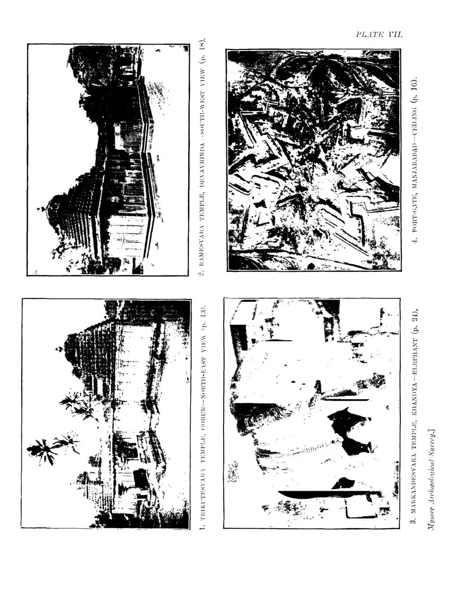
- THIKUTESVARA TEMPLE, GORGIR - NORTH-EAST VIEW (p. 13)
- RAMESVARA TEMPLE, DEVAVRINDA - SOUTHEW-WEST VIEW (p. 18)
- MARKANDESVARA TEMPLE, KILANDYA - BELEIPHANT (p. 24)
- PORT-GAYE, MANARABAD - CHELING (p. 16)
Cited in the text: p. 13 ↩, p. 16 ↩, p. 18 ↩, p. 24 ↩, p. 26 ↩
Hoysaļa temple also was very probably a three-celled structure with right-angled garbhagrīhas similar in form to the Trikūtēšvara temple and probably of the same age. These three old cells perhaps housed the present Vāsudēva image in the main cell, the Yōgānarasimha image of the village in the north cell and the third image was possibly that of Vēnugōpāla. Could it be that the extraneous Vēnugōpāla now worshipped in the south-west shrine of the prākāra of the Rāmēšvara temple at Rāmanāthapura 1 originally belonged to the Vāsudēva temple of Gorūr?
Narasimha Temple
The Narasimha temple near the river is situated in a beautiful grove but faces west. The temple was built definitely after about 1586 A.D., since an inscription slab of the Vāsudēva temple now covers the ceiling of the garbhagrīha of this temple. The image of Yōgā-Narasimha (Pl. II, 3) is a good one of Hoysaļa workmanship but is covered with a thick coat of wax.
The inscription just mentioned is a new find. That numbered as Hn. 179 in the Epigraphia Carnatica, Vol. V, was revised. It is included in the Hassan District Supplement as No. 192.
Inscriptions.
Another inscription which is stated to be similar to Hn. 179 and is inscribed on the four pillars of the navaraṅga of the Trikūtēšvara temple was also revised and some differences in its reading noted.
Haļe-Bēlūr
About four miles south-west of Saklēšapur is the village of Hāle-Bēlūr, called in the inscription 2 as Hāruva-Beluhūru. In the village a modern gable-roofed temple of wooden pillars and beams is built enshrining an image of Vāsudēva which originally belonged to a temple of the times of the late Kadambas who were subordinate to the Chālukyas. The doorway of the garbhagrīha is of the same period and of potstone and similar to those of the Hoysaļa period. The image of Vāsudēva (Pl. VIII, 2) is damaged and looks much worn out. It is in a standing posture and holding gadā, šankha, chakra and padma. The tiara over the head reminds us of that over the image of Yogā-Narasimha in Sāligrāma since the angle of the cone is acute. The floral prabhāvaļi does not contain the daśāvatāras carved on it.
To the south-west of the temple is the inscription Manjarābād 18 which refers to the original temple. On the top of the inscription slab (Pl. VIII, 1) is a fine kīrtimukha panel with the figure of Kēšava flanked by a two-handed figure to the right standing in tribhaṅga , and a cow and its calf to the left.
2. Manjarabad 18, Epigraphia Carnatica, Vol. V, Hassan District.
Part II: Study of Ancient MonumentsMaļali
At Malali by the side of the waste weir to the north of the village stand two temples of soapstone, one of which is in a bad state of ruin. The larger one, however, is still standing. It is an ornate structure (Pl. VIII, 3) of about the Hoysala period, perhaps of the thirteenth century, and appears to have had a stepped pyramid tower of dentil cornices, which has now almost disappeared. The temple does not appear to have had a navaranga, since there are no signs of it. Two small elephants lead up to the platform and the sukhanāsi doorway with its perforated jambs. Vaishṇava dvārapālas and eight-pointed star-shaped pilasters. On the pillars and lintel are also carvings of Vēṇugōpāla, Kālingamardana, Gōvardhanadhāri and Ugra-Narasimha. The sukhanāsi has a square domed ceiling. The garbhagriha doorway has a Gōpālakrishṇa lintel. On the Garuđa pedestal inside now stands a small linga with its own pīṭha and in the garbhagriha are also kept images of Ganēśa and Vāsudēva which appear to belong to very late Hoysala times. The image of Vāsudēva with its broken head appears to be a late Hoysala piece meant more for the Pañchāyatana of a Śiva temple than for the main image of a Vaishṇava temple.
Manjarābād
Angađi; Vāsantikā Temple; Bastis; Dēvavřinda; Rāmēšvara Temple
Four miles to the north of Saklēśapur, on a hill commanding the highway leading from Mysore to Mangalore, Tippu built a fortress of a rather fanciful shape which he named Manjirābād. It covers the top of a mud and laterite hill, about 200 feet high, and is very small in dimensions, being about 120 yards in diameter. Its gate is guarded by an outer fort line so that it has an outer, a middle and an inner gateways. A steep ascent leads to the outer gate (Pl. XVII, 2) which has a pointed arch and stone jambs bearing ornamental creeper bands growing out of narrow-necked jugs and bands also of tiger stripes.
In the ceiling of this gateway (Pl. VII, 4) is shown the plan of the fortress with its gates and a round battery in the centre. Probably this proposal was not carried out.
Another foliated gate leads into the fort yard (Pl. IX, 2 and 3) in the centre of which is a cross-shaped tank and two structures of brick and mortar, having steps. In the north-east wall commanding the pathway up the hill are several vaulted guardrooms equipped with an underground cell and what looks like a latrine. The fort is in the shape of an eight-pointed star (Pl. IX, 1) and the parapet which is thick and about 10 feet wide, is well provided with cannon mouths and musket holes. At the outer corners there are round guard rooms with musket holes. A moat and an outer wall surround the fortifications. The prospect on all sides and, particularly, on the south towards the Kumārasvāmi hills, on the north towards the Bābābuđan,
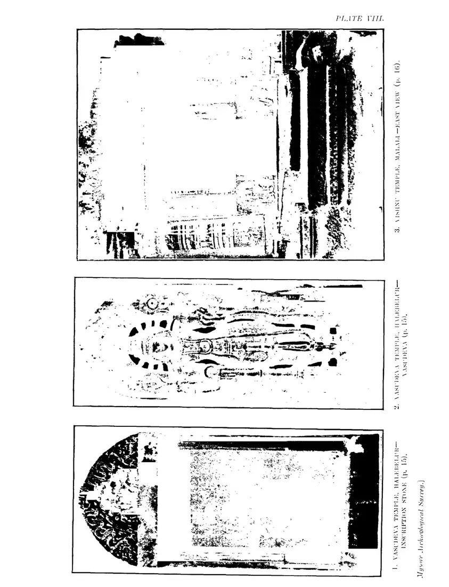
- VASUDEVA TEMPLE, HAMBEBELTUR — ENSCRIPTION STONE (p. 15)
- VASUDEVA TEMPLE, HAMBEBELTUR — ENSCRIPTION STONE (p. 15)
- VISHENT TEMPLE, MALAMI — EAST VIEW (p. 16)
and on the west where the road to Mangalore winds through the dense vegetation of forests and plantations, is most beautiful. To the north, half a mile away, is a higher peak from which a battery could perhaps easily command this fort. Perhaps the range of cannon in Tipu's days was shorter, or it may even be that the fort was built on a hill where water could be stored.
ANGADI.
The temple of Vāsantikā is a very modern structure recently repaired by the villagers and has a roof of Mangalore tiles with inner wood work. In the garbhagriha there is a group of colossal Saptamātrikās in stucco consisting of Vaishṇavī-śakti or the so-called Vāsantikā (Pl. X, 2) as the central figure facing east, and to her right Kaumārī with a small image of Shaṇmukha on the pedestal, Brāhumī with three visible heads to further right facing north, and to her left Vārāhī with a cow's head and to further left facing south Māhēśvarī with four hands, the back hands holding triśūla and ḍamaruga. Vaishṇavī holds in her back hands chakra and śankha and has a prabhāvalī with a seven-hooded snake rising up over her head. On the pedestal of each of the goddesses is the head of a rākshasa; on each thigh of each, a cobra. The other three goddesses have two hands only and appear to hold a sword handle in the right hand and a bowl in the left. They wear breast bands, tight fitting bodices and skirt-like lower cloth, large ear-rings and kirīṭa or crown of the conical type. These figures remind us of similar images at Kōlār and Śeṭṭigere near Bēlūr and appear to belong to Dravidian workmanship. They are probably of about 1000 A. D., though not of high sculptural beauty. The sanctum walls have been more recently painted as also the west wall of the anti-chamber with the Śaiva dvārapālas. It is said that the goddess declares oracles to one of the local devotees. There is no vestige of a stone building near this temple. Its present dīpastambha pillar evidently belongs to the Kēsava temple.
The identification of Vāsantikā with Vaishṇavī Sakti is noteworthy in view of the widespread belief that this patron-deity of the early Hoysaļas was a Jain goddess.
The tōraṇa of Nēminātha is well ornamented and resembles that of Ādinātha at Bastihalļi near Halēbīd. Behind the two beautiful chamara bearers, it has the images of the eight Dikpālas.
Bastis. The pillars of the shrine to the east are of granite with cylindrical shafts and hemispherical mouldings. The Yaksha and Yakshī (Pl. X, 3 and 4) standing in the sukhanāsi are beautiful. The Yakshī holds in her right hand a bunch of flowers, while her left rests on the head of a boy. In the sanctum there are three standing figures. The west shrine has been repaired recently and is now out of danger. The repairs to the east shrine should be taken up immediately.
3
DEVAVRINDA.
RĀMĒŠVARA TEMPLE.
Dēvavṛinda is an important local place of pilgrimage in the south-west corner of the Mūđgere Taluk, close to the Ghāts, and belongs to the Goṇībiđu hobli. It appears to have been a place important for the worship of Lakshmī as early as the Gaṅga days.
It has a well-known temple of Rāmēśvara (Pl. VII, 2) whose mahādvāra, prākāra, etc., appear to belong to the Vijayanagar period. The main temple, however, appears to date from the late Hoysaļa times. It is a granite structure with a garbhagrīha, a sukhanāsi and an inner navaraṅga with pilasters on the outer walls and a square stepped pyramid tower of dentil cornices, all of which belong to the late Hoysaļa times. The mukhamaṇtapa is now enclosed and the cubical mouldings of the pillars are all ornamented with figure sculptures which appear to belong to the Vijayanagar period. The outer walls have shallow niches also in addition to the pilasters. But for the stepped pyramid tower, the temple has little to distinguish it from the early Vijayanagar structures. The mukhamaṇtapa is now approached by a flight of steps which is supported by two yālis. Among the pillar sculptures are found indecent figures, Krīshṇa and the Yamaļārjuna tree. Šiva as Nandivāhana, Kapila-rishi, etc. The canopies over several of the figures in the mukhamaṇtapa have chain ornamentation which was very prevalent in the 14th century. In the prākāra are the shrines of Kēśava—a late Hoysaļa image—Vīrabhadra, Āṇjanēya, a small Vijayanagar period image, and Dēvī. The Vīrabhadra shrine has also a stepped pyramid tower. The Dēvī image (Pl. X, 1) is a good piece of work with a well ornamented crown and a breast band. It has two hands, one of which holds a lotus bud and wears a sari tied up in the middle Vijayanagar fashion.
The prākāra of the temple is greatly damaged, the major part having disappeared. It is worth while to repair the temple properly, since it appears to be important from the Muzrai point of view.
Bēlūr
The renovation work at Bēlūr is in good progress. The kalyānamaṇtapa and the Nāganāyakana-maṇtapa which were dilapidated were removed, so that a good view of the Chennakēśava temple is obtained from the south-east (see frontispiece ). Some new inscriptions have been discovered, and copied.
Seťtigere
Karagađa; Inscription; Images
About four miles north of Bēlūr is the village of Šettigere with two temples situated a little south of the tank by the road side. The bigger building facing east
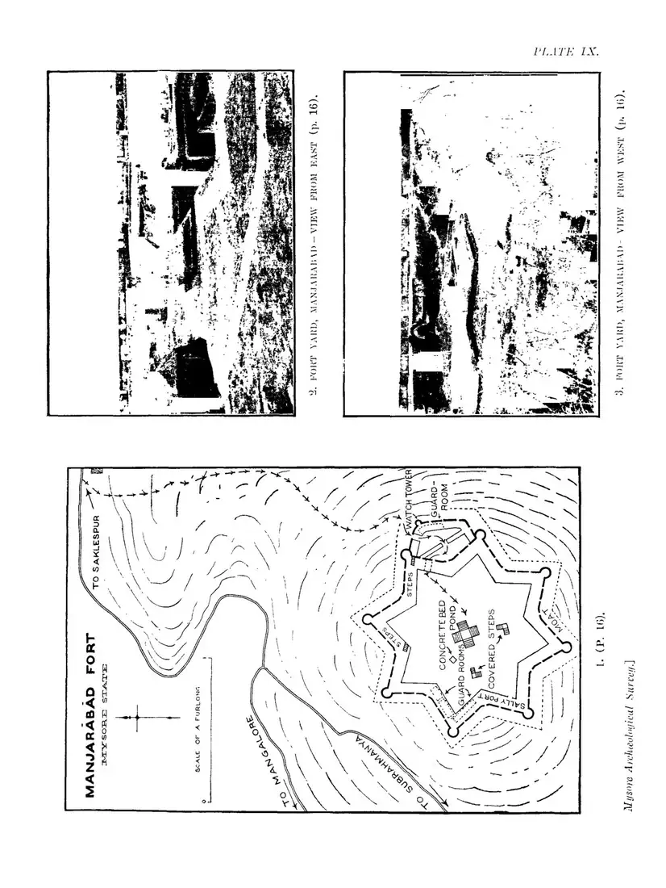
- (p. 16)
- FOUT YARD, MANJARABAD - VIEW FROM EAST (p. 16)
- FOUT YARD, MANJARABAD - VIEW FROM WEST (p. 16)
has the stucco image of Durgā called Dēvīramma, which, in certain respects, resembles the Māhēśvarī of the Saptamātrikā group at Aṅgađi, though the tiara and the folds of the sari are different here. The occurrence, however, of the parrot motif on the prabhāvaļi as also the yālis is suggestive of the probability that the image might be as old as the parapet of the Subrahmanyēśvara temple in Rāmanāthapura which has an inscription of the 17th century. Perhaps stucco images were made even during this late period. The only inscription found in this village is on the lamp pillar, perhaps of the utsavamūrti, inside the village and is dated in Sādhāraṇa corresponding to about 1611 A. D. The goddess sits in sukhāsana holding in her four hands the handle of a sword, trišūla, drum and bowl. There is no figure on the pedestal to indicate what type of Śaktī the image is. The eves are large, the eyebrows conventional, the nose is acquiline and the face wanting in beauty.
A little to the north-east of the Dēvīramma temple is another smaller structure enshrining in its garbhagriha a small stone image of Mahishāsuramardinī.
Both the shrines are architecturally insignificant.
KARAGADA.
Further north, about two miles from Šeţtigere, is the village of Karagađa in which is situated a modern building enshrining Ānĵanċya, a relief figure of the Vijayanagar period. In the front aṅkaṇa are kept two inscription slabs and some
Inscriptions. Nāga stones. One of the inscriptions relates to Mārasinga, the Gaṅga king, and his battle with Rājāditya who besieged Uchchangi in Śaka 893. The inscription has been included in the unpublished Hassan Supplement as No. B1. 308. The top panel contains, in relief, the figure of a tame and caparisoned elephant standing to left before a conch. Below the panel are other relief figures of a crescent, sun and goad. On the other inscription slab below the sun and moon is a panel with a Śrī-Vaishnava tripuṇḍra supported by śankha and chakra. Below the panel there appears to have been an inscription which is now completely effaced.
Two mutilated images, one of a Śaivaite dvārapāla and the other of Sūrya, are standing close by the Ānĵanċya temple and on either side of what is called the Bhūtadaguđi. They prove the existence of a Hoysaļa Šiva temple in the village.
Images.
Marale
Marale is a village about nine miles to the south-east of Chikmagaļūr. It has an old tank on the north-west side, of which on a high ground and in a commanding position stand two temples side by side. The larger or northern one is dedicated to Kēśava and was, according to epigraphical records, constructed by Rāyaṇa-Daṇdanātha in 1130 A. D. and visited and endowed with lands, etc., by Vishṇuvardhana Hoysaḥa. The southern and slightly smaller temple is dedicated to Siddhēśvara according to the inscription No. 141, Chikmagalur Taluk, though in the inscription No. 140 the original name of the linga appears to have been Kali-dēva. This temple is also said to have originally been constructed, possibly about the same time, by Rāyaṇadaṇdanātha in the reign of Narasimha I Ballāḥa. Both the structures are of soap stone and are well ornamented, though the temple of Kēśava is the larger and better executed of the two. In their general appearance they remind us of the twin temples at Mosaḥe to the south of Hāssan.
Kěšava Temple
The Kēśava temple has a garbhagriha, a closed sukhanāsi, a navaraṅga of nine squares and a porch of one square. (Pl. XI). The basement is on the outside cut up horizontally into four cornices without ornamental designs (Pl. XII, 1). One of these bears the dentil mouldings meant for the makara faces and the cross designs. The navaraṅga and also the garbhagriha are square in form with projecting centres on the outer sides. The upper portions of the walls are ornamented with a number of ornamental turrets, some being of the stepped pyramid kind with dentil cornices, borne on pilasters of the indented square pattern. The others are of the multi-turreted type borne on tall double pilasters. Some of these have exquisite designs. Those on the north and south sides have standing groups of Vishṇu (gadā, chakra, śankha, padma) and Kēśava. Their flanking turrets are surrounded by beautiful serpentine bands. The three niches on the outside of the garbhagriha are specially beautiful, the one on the south being perhaps the best. It has a row of lions on the basement, floral reliefs in imitation of perforation on the sides and beaded work hanging from the eaves. Under the north niche is a well carved sōma-sūtra ornamented with makaras. The double eaves have beaded hangings and the old parapet is missing. The present tower is one of brick and mortar constructed in the last century.
The porch is entered between two elephants bearing ornamental trappings including head bands, chains, jingled necklaces, bells and anklets, and offering lotus flowers with their trunks. The two pillars of the porch are of the thirty-two fluted Hoysaḥa type with all the classical mouldings of the disc, the bell, the pot, the wheel, etc. The low stone benches on either side of the porch and their railings have now disappeared. The porch ceiling is a flat one with nine squares, the central one bearing a Lakshmīnārāyaṇa group with the guardians of the points around. On the beams below it are the twenty-four forms of Vishṇu, etc., and on the corner stories further down are carved groups of dancers. The navaraṅga doorway which
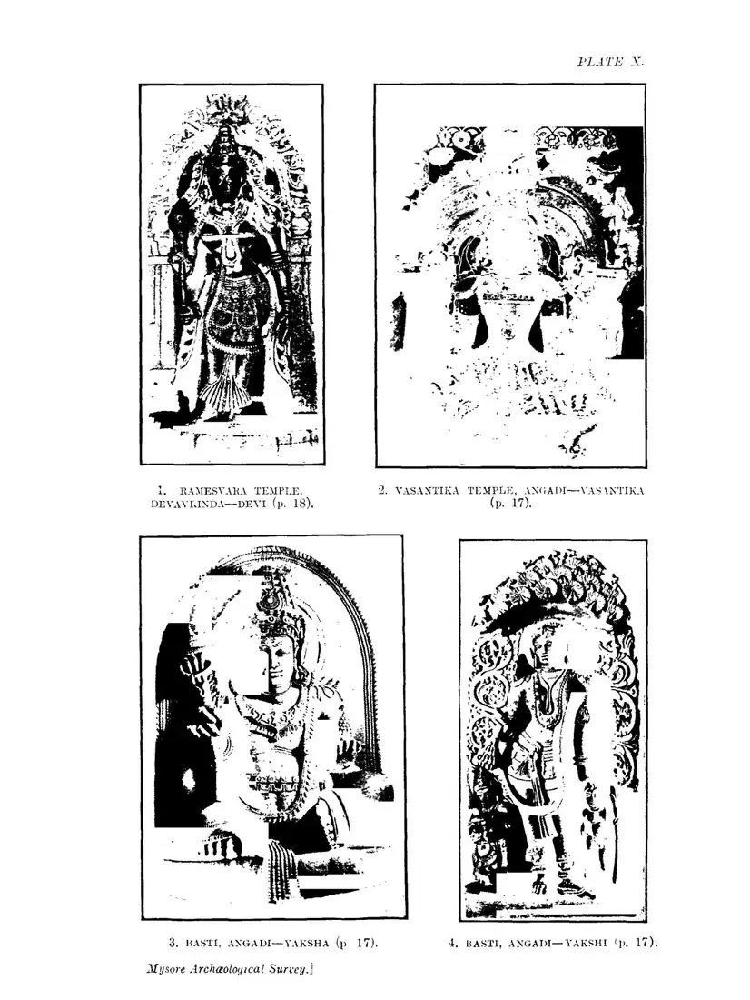
- RAMESVARA TEMPLE DEVAVIKINDA—DEVI (p. 18)
- VASANTIKA TEMPLE, ANGADI—VASANTIKA (p. 17)
- BASTI, ANGADI—YAKSHA (p. 17)
- BASTI, ANGADI—YAKSHI (p. 17)
is comparatively plain has, above the lintel, a panel with Lakshmīnārāyaṇa flanked by elephants and supported by two images of Vishṇu seated in padmāsana.
The navaraṅga has four fine round pillars bearing beaded work. Above their umbrella mouldings which have flying Yakshas there were formerly bracket images four for each, i. e. , sixteen in all. Out of this number five only now remain. They are finely shaped and beautiful with well designed creeper tōraṇas. Probably they come from the same sculptors as carved the bracket images at Bēlūr. Those that now remain are :—
South-East Pillar.—
(1) Lady with parrot—damaged.
(2) Boy dancing while playing on flute; hands broken.
North-West Pillar.—
(3) Abhinaya or gesture. The lady stands finely poised in tribhaṅga . Her face is beautifully moulded, but her expressive hands are broken.
North-East Pillar.—
(4) The Dance. Both hands and one foot of the lady are missing.
(5) The Dance begins. The lady has commenced to beat time with her left toe which is slightly raised.
The ceilings are all flat and divided into several panels each. They generally bear relievo flowers with a Dikpāla in the centre. The central ceiling only has a Lakshmīnārāyaṇa group in the centre, surrounded by the Dikpālas, each group being placed in a circle. On the corner stones are sculptured groups of male and female dancers with accompaniments. In the upper band are carved the twenty-four forms of Vishṇu.
The sukhanāsi doorway which is covered over with a coat of line-wash has a Lakshmī-Nārāyaṇa group in the centre between two makaras and two Śakti goddesses. On the jambs are carved two fine dvārapālas (slightly mutilated). The sukhanāsi ceiling is elegantly designed with a pendent circle in which is carved a very fine Lakshmīnārāyaṇa group. Above the garbhagriha doorway between Nārāyaṇa and Kēšava is an Ugranarasimha group with Garuḍa and Prahlāda. Inside the garbhagriha under a flat ceiling finely ornamented with a padma surrounded by knobbed bands is a pedestal bearing a fine image of kneeling Garuḍa with his wings opened, his fangs showing and his hands joined in reverence under a serpentine canopy. On the pedestal stands a well carved image of Kēšava (Pl. XII, 2) of about six feet in height in all excluding the pedestal. Its nose and chin are slightly damaged and mar the beauty of its face. The latter with its chubby cheeks is more like Vijayanārāyaṇa of Bēlūr than Kappe-Chennigarāya. The emblems, however, are finely designed and deeply carved as also the two-handed goddesses. Bhū holds pāśa and kalaśa while Śrī holds kalaśa and padma. The tōraṇa is finely designed and around its serpentine band, etc., are the ten avatāras of Vishṇu in good relief. As usual the fish and tortoise are in their natural form; Buddha is seated in yōgāsana; but Kalki appears sword in hand, riding on a spirited horse.
The temple is intact. The whitewash in the interior, particularly that covering the sculptures, should be carefully scraped off by skilled hands. The porch in the north-east corner has been provided with props.
Siddhěsvara Temple
The Siddhēśvara temple is in general plan and design similar to the Kēśava temple, being square in form (Pl. XIII). It is slightly smaller and has more of figure sculptures. Its basement is similar, though the turrets of its niches have other and perhaps slightly inferior designs. The figure sculptures on the walls are standing from near the porch and running clockwise:
East Wall—right side.— Vidyā-Gaṇapati; Srī-Rāma with four hands, an ugly and extraneous piece, perhaps introduced in the late Vijayanagar times.
South Wall.— Mahishāsuramardinī: Sarasvatī dancing with accompaniments; (a vīragal of 1110 A. D. has been introduced into the wall); Vīrabhadra dancing, bearded Brahma; Rati and Manmatha; Śūrya (8 horses instead of 7 on the pedestal) with a goddess; Bhiravī: Bhairava;
West Wall.— Shaṇmukha on peacock, Tāṇḍavēśvara, Pārvatī (rosary, trident, mirror and fruit);
North Wall.— Brahma, Ugranarasimha, Dharaṇi-Varāha group; Pārvatī; Tāṇḍavēśvara: Vishṇu (unfinished). Trivikrama (with the right leg broken); Trivikrama (gadā, chakra, śankha and padma); Bali and Vāmana, Gajāsuramardana; Gajēndramōksha; Vishṇu (broken); Kēśava (padma, śankha, chakra and gadā).
East Wall—left side.— Bhairava and Bhairavī.
The eaves, parapet, etc., are similar to those of the Kēśava temple; but the modern brick tower has been given a very inelegant shape which is out of harmony with the surroundings.
The porch is similar to that of the other temple with Umāmahēśvara flanked by Gaṇēśa and Sarasvatī on the lintel and Tāṇḍavēśvara surrounded by Dikpālas in the ceiling.
The navaraṅga pillars are less ornamental than those in the Kēśava temple; and each ceiling except the central one is flat and bears a Dikpāla surrounded by eight flowers on a flat slab. The central ceiling is, however, a fine one. The pillars have no bracket images. On the beams and corner stones appear three rows of sculptures:—
Bottom: East— a dancer dancing with drummers and musicians accompanying; one of the dancers has her cloth pulled off by a monkey;
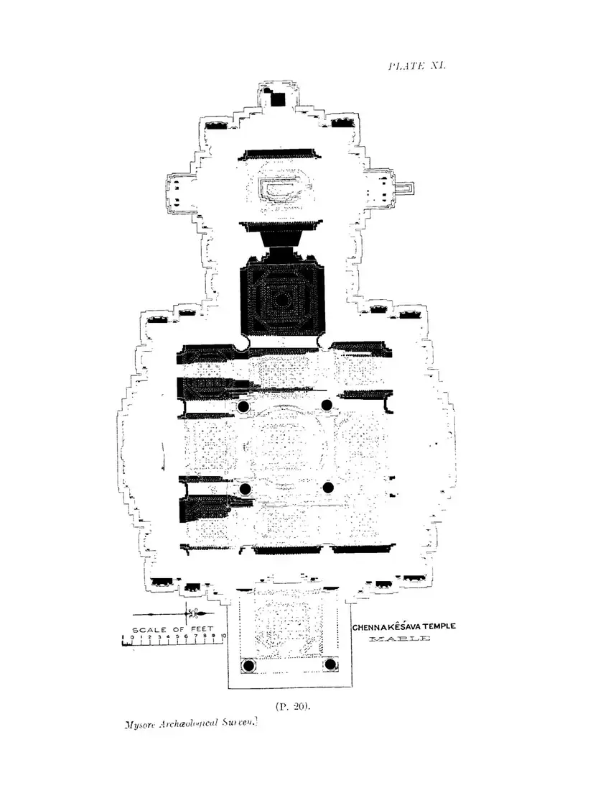
- (p. 20)
Cited in the text: p. 20 ↩
South —(1) the Dēvas and Asuras churn the milky ocean ;
(2) a king and queen, Emperor Narasimha and his queen perhaps, hold durbar, while wrestlers wrestle and women exhibit acrobatics ;
West —a man and a woman dancing with accompaniments.
North —(1) Umāmahēśvara group ;
(2) a pot-bellied Yaksha dancing with accompaniments ;
(3) the story of Śiva as Kirāta fighting Arjuna.
Second band : East —Dancing group.
South-East —Dancing Gaṇēśa with accompaniments.
South —Drummers and musicians.
South-West - Goddess dancing.
West — do
North-West —Śiva holding court.
North —Goddess dancing.
North-East —Śiva's attendants like Vīrabhadra, etc.
Top band : Twelve goddesses resembling the Saptamātrikās.
Ceiling slab —On this are nine circular panels with the Dikpālas around and Tāṇḍavēśvara in the centre.
The sukhanāsi is open and now contains an image of Vidyā-Gaṇapati, etc. The sukhanāsi ceiling has Tāṇḍavēśvara surrounded by padmas. The garbhagriha doorway has on the top panel Lakshmī seated between elephants. The garbhagriha ceiling is a shallow dome. The Siddhēśvara linga appears to be a much worn natural stone.
The temple is not kept so clean as the other one. Its flooring slabs have been lost and the ceiling appears to be leaking. It deserves these small repairs.
An inscription was found below the figure of Sarasvatī on the south outer wall of the navaraṅga. It mentions a certain Kulļayya.
Minor Temples
The Kamathēśvara and Bhairava shrines are ruined structures to the north of the village. They are architecturally unimportant with plain square pillars and brick towers plastered over. Inside the navaraṅga of the Kamathēśvara shrine are kept the images of a bull, Vishṇu, Gaṇapati, Durgā and Sūrya. The Bhairava image in the dilapidated Bhairava temple is ugly and supported by independent images of rude goblins on either side.
There are three vīragals and an uyyāle-kamba in front of the Bhairava temple. Another vīragal stands a little to the south of the Kamathēśvara shrine, while to the west stand two māstikals, one of them showing in relief three hands.
The Kālammā temple which is in the heart of the village is a structure of the Pāllegār times and unimportant architecturally. The wooden car is dilapidated and the car festival has, therefore, been suspended since over twenty years.
Part II: Study of Ancient MonumentsKhândya
Conservation
Khāndya is a little village on the right bank of the Bhadrā about two miles to the north of Sangamēśvarpet which is about six miles east of Bālehonnūr. It has been described in brief in the M. A. R. 1929, p. 7.
According to the inscriptions, which are four in this place, there existed in the days of Vīraballāla II, three temples, viz. , Mārkaṇdēśvara, Janārdana and Bīredēva. The last of these is said to exist in the forest on the other side of the river. Of the first two the only portions that can be ascribed to the Hoysala or any earlier period are the two elephants, one of which has been illustrated in Pl. VII, 3 in front of the Mārkaṇdēśvara temple and the Janārdana image and a few pieces of soapstone beams, etc., which are now lying behind the Janārdana temple. The rest of the Mārkaṇdēśvara temple appears clearly to be a simple but homogeneous structure of the Malnāđ or Keļadi type belonging to the 16th century A. D. It consists of a garbhagrīha enshrining an old and worn out linga, and having a padma ceiling, of a sukhanāsi with a pradakshinā as at Šringeri, Banavāsi and elsewhere, a navaranga with four granite pillars of cubical mouldings, octagonal shafts and wheel-shaped tops, and a porch flanked by stone benches provided with round-topped railings. On the navaranga pillars are carved Vīrabhadra, Bhairava, Garuđa, Hanumān, etc. A common ornamental design is the wheel with curved spokes or padma peculiarly arranged and so prominent at Keļadi (M. A. R. 1932, pl. XIV, 1). There can be little doubt that the present temple was constructed in the late Vijayanagar period by either Venkaṭapa-nāyaka of Bēlūr or his contemporary of Ikkēri. Temples of a similar type are found at Kaļasa and elsewhere. The steps leading to the porch and the elephants guarding them are good pieces of Hoysala work.
The Janārdana temple with its garbhagrīha, sukhanāsi and long navaranga is also a structure of about the Vijayanagar period. The Janārdana image, however, though much mutilated and broken into pieces, is an interesting one. It is really not Janārdana at all; but Venkaṭēśa of the old type seen at Talkāđ and on the west wall of Binnamangala. It is a standing figure with long conical kirīṭa, the jaṭā falling behind the neck, no phālāksha, a prayōga-chakra in the right back hand and a śankha held between two fingers of the left hand, the left forehand looking as if in kaṭihasta. The right forehand is unfortunately broken, but appears to have been in the dāna-mudrā with the fingers somewhat drawn up. The image may well be attributed to the Chōla period or about the 11th century A. D.
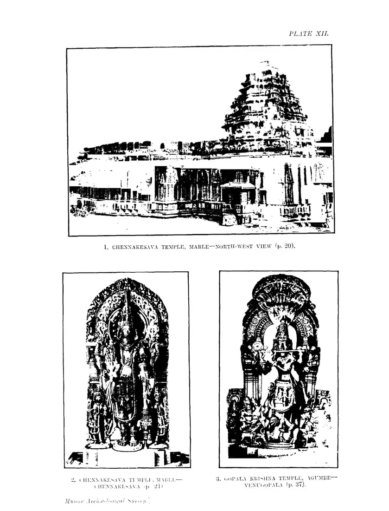
- CHENNAKESAVA TEMPLE, MARLE—NORTH-WEST VIEW (p. 20)
- CHENNAKESAVA TIMPLI, MARLE— CHENNAKLSAVA (p. 21)
- GOPALA KRISHNA TEMPLI, AGUMBE— VINUGGOPALA (p. 37)
Around its legs is a stone box and tradition says that it was the sacred box of Agastya from a sāligrāma in which 'Janārdana' manifested himself while the sage was taking a bath in the Bhadrā. The mahādvāra and the prākāra walls are also of the late Vijayanagar period.
The temples were repaired about five years ago at a cost of about Rs. 5,000.
Conservation. Both the temples are now in a sound condition except for the dilapidated prākāra wall. The Bhatṭar complains that his very low emoluments have compelled him to think of voluntary retirement. Since such an event would lead to the neglect of the temple, it may be recommended that the emoluments may be increased, worship being revived in all the four temples in the neighbourhood.
The image of Yōgānarasimha near the river (1 feet high with the Garuda pedestal) is a piece of Hoysala workmanship slightly damaged. Nothing of the old temple remains except a large number of worked stones which are lying about and the basement of the old temple. The image is now absolutely in the open air and is at the merey of any vandal who would mutilate it. It may be removed to the navaraṅga of the Janārdana temple and installed there facing south so that it may be worshipped along with Janārdana. Otherwise it may be removed to a museum.
Bālehonnur
Bālehalli; Vīrabhadra Temple
From the bridge at Bālehonnūr a grand view of the Bhadrā river is obtained (Pl. XIV, 1).
BALEHALLI.
VĪRABHADRA TEMPLE.
The tempte of Vīrabhadra in the village of Bālehalli is a granite structure with a garbhagrīha, a sukhanāsi, a navaraṅga and a porch. The last, according to the inscription of a pavement stone slab, was constructed in Ś 1454 i.e. , 1532 A.D. Inside the garbhagrīha is an image of Vīrabhadra mentioned in an inscription dated Śaka 1290 (see M. A. R. 1932, Inscription No. 44). The pillars in the navaraṅga are thick and square with the figures of Basava, etc., in relief on their cubical mouldings. The tower over the garbhagrīha is a stepped pyramid as that of the Mārkandēśvara temple at Khāndya. The kaisāle around has old wooden pillars in imitation of the stone ones of the period. The temple is architecturally unimportant.
Šringeri
Vidyāśankara Temple; History; Situation; General Description; Platform; Basement
VIDYĀŠĀNKARA TEMPLE.
History. The Vidyāśānkara temple is doubtless the finest architectural structure in Śringeri and one of the best in the Mysore State. It appears to have been constructed to commemorate Vidyāśānkarasvāmni who has been identified by
4
Mr. R. Narasimhachar with Vidyātīrthasvāmi, the famous guru who was living at the time of Bukka's visit to the place in 1356 A. D. and probably died very soon after. Thus the temple may be ascribed to the date circa 1357 or 1358 A. D.
Its situation is one of the most picturesque in the whole state, comparable in some respects with the position of the Taj at Agra. The Situation. Tungā rushing down from the hills makes a loop here flowing first towards the west, then towards the north and then turning east. Just where the last turn is taken its left bank is steep and high; and on this ground within 50 yards of the river this beautiful temple has been built facing east and thus parallel to the river. A very fine view is obtained from the opposite bank 1 .
A general glance at the temple gives the impression that it is somewhat like the famous Hoysaļa monuments. It is built on a platform, General Description. about 4 feet high. The upper portion of its walls has rows of turrets under which stand large sculptured images. Above a set of double eaves rises a tower whose general look is like a stepped pyramid. The temple is built entirely of granite of which there appears to be a quarry near Šringēri.
The plan of the temple is extraordinarily interesting and peculiar 2 . Two semi-circles or apses form its eastern and western ends; and they are connected by an oblong block so that the whole shape is roughly that of two semi-circles connected by a square.
The building has a garbhagriha, a wide sukhanāsi with which is connected a semi-circular pradakshinā, and a navaranga with a large central square. It reminds us of the Buddhist chaityas, the Vishnu temple at Aihole and perhaps of the palaces of the Achemenian emperors. But there is little doubt that the architect has taken his cue from the round-backed Hoysaļa temples with numerous importations from the Chōļa temples of South India. The result is an attractive and highly interesting composition in which are mixed up several features of the Chālukyan and the Draviđian styles. These details will be noticed later on.
The platform which follows the contour of the main temple is a strongly built structure with a number of cornices one of which bears Platform. small kīrtinukhas on its dentil projections. Since the temple has six doorways, the platform has six sets of steps, each of which is flanked by a pair of elephants, each animal holding a large fan-like floral design. The animals have no individuality and are not comparable to Hoysaļa elephants in similar positions.
The temple is raised upon a basement, more than 5 feet in height, which with another set of cornices, reaches up to a height of Basement. about 8 feet. This portion has nearly half a dozen
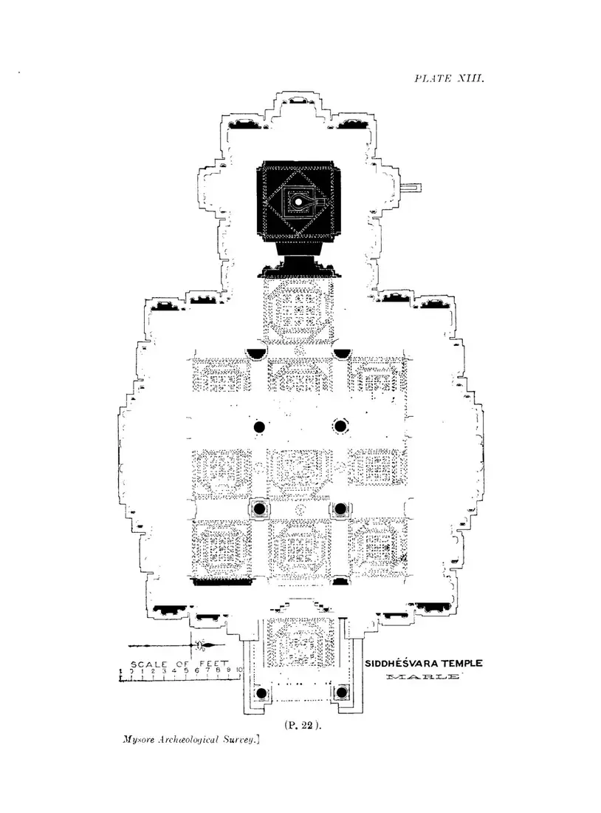
- (p. 22)
Cited in the text: p. 22 ↩
cornices and about five sculptured bands making in all nine noticeable rows. The bands and cornices offer a pleasing contrast of light and shade, which is in imitation of similar Hoysala work.
Bands
No heading in the body: this section starts at its printed page (27-29).
First band—Horse frieze.— At the bottom comes a row of horses with accoutrements and their riders sometimes leading them. Though Bands. these animals are often similar, a few of them are in highly spirited postures and have individualities of their own: for example, a horse tearing the ground with its hoof—north-side middle. Occasionally we get other animals like hooded cobras with or without charmers, camels, tigers, lions, a herd of deer (north-west corner), etc., while the corners generally have some ornamentations like towers.
Second band—Elephant frieze.— This has a row of elephants accoutred and in various interesting postures. Occasionally a tusker fights a man or another elephant or a lion. Some interesting groups are mentioned below:—
South-East— Elephant slaying man; tusker attacked by lion.
South-West— Two tuskers slaying a lion.
North-West— Two rams fighting a led camel.
North— Hunch-back and mate.
North-East— Elephant and bull with a common head; elephant goring a man to death and hurling him; man fighting lion.
Third band.— This is a cornice having a rope design ornamentation with a band of flowers on its face and beads in the valleys.
Fourth band—Lion frieze.— This is a frieze of lions in various postures with an occasional Yaksha, yāli, cobra, monkey or boar (east).
South Wall— Sala killing the lion.
North-West wall— Lion-headed peacock, yāli (long trunked), lion with long snout, tiger slaying a deer.
Fifth band.— An eaves-like cornice with drops at bottom and a row of lion-headed kīrtimukhas on its face. Under the kīrtimukhas and the corners are occasionally carved figures of Nāgiñīs, Yakshas, monkeys, Ēhisis in āsanas, frogs, parrot pecking at leaf (north-west), snake-charmer with his group consisting of cobra and monkey (north-west).
Sixth band.— This is perhaps the most interesting of the bands since it contains hundreds of little panels illustrating the Purānas, traditions, etc. Local people identify several of them as incidents in the life of Srī Šānkarāchārya. But it looks more like the Aśvamēdha episode of Arjuna. Commencing from the east and moving clockwise, the more interesting of them are studied here:—
South-East.—
(1) An aśvamēdha horse is led forward preceded by spearmen, bowmen, men carrying a gong and varied drums, trumpeteers, conch-blowers, etc., and followed by a
4 king in a palanquin with his unbrella bearer, heralds, etc. A lady on an elephant and a prince royal on horseback are followed by attendants, footmen, horsemen and elephantmen (Identity of the scene to be ascertained).
South Wall —The procession moves on until the royal hero is received by a group consisting of men and women accompanied by lancers and musicians until he is led to a throne and has his feet massaged in the open court. The hero who has laid aside his bow and arrow prays to a three-headed god (Agni or Brahma) who is attended by a group looking like the eight Dikpālas, one of whom is leading an animal resembling a buffalo. The hero prostrates before Brahma and Sarasvatī who are attended by a number of their rishi pupils. A lady pleases Brahma and receives a gift, to celebrate which event she plays on a rudra-vṇṇā . The hero follows the sacrificial horse which mounts a hill. The defeated hero is restored by a drink offered by the lady who was erstwhile playing on the vṇṇā in worship of a linga. The hero and heroine are married.
South-West —Receiving prasāda of the linga, they ride on the same horse and proceed to meet a lady with a mongoose, probably Pārvatī. They ride forward and are reverently received by a king who prostrates himself before them and takes them in procession in a palanquin to his palace.
North-West —There they are received by the king and queen who bless them. The couple are saved from the sword of an enemy by the intervention of Vishṇu.
(2) Arjuna performs penance among the rishis of the Indrakīla. Śiva persues a boar and a fight ensues. The fight is carried on with bows, swords and boulders.
North Wall —The opponents box and wrestle, while Pārvatī looks on.
Arjuna is worsted and worships the linga in order to come back again to the fight. The identity of the hunter and huntress is known to him and he prostrates before them.
Śiva and Pārvatī, seated in state and attended by the Gaṇas, bestow Pāsupatāstra on Arjuna.
(3) Śrī Śankarāchārya is teaching his pupils. He is seated on a raised seat wearing a necklace and a conical kirīṭa, with his right hand in chinmudrā and his left holding a book. His sanyāsi disciples sit by him, two on each side; eleven other disciples are seated to his left, and five in the other panels to his right. A grihastha scholar is teaching while royal personages are listening or are prostrating.
(4) The presentation of a palm-leaf manuscript is being made.
(5) Yōgis performing yōga in various attitudes, (north-east) sometimes riding on fish, tortoise, scorpion, etc.
Seventh band. —Next above is a cornice with drops below and a floral band on its face. Near the doorways this cornice has varied patterns of Śrī-chakra. This cornice marks the level of the floor inside the building.
Eighth band. —Next above is a band depicting groups of Yakshas and dancers in various dancing postures accompanied by drums, pipes, etc.
Large Wall Images
South-East—
(1) Indra (abhaya, dagger, javelin, dāna), elephant on pedestal.
(2) Four-handed male figure (rosary, not carved, kalaśa, open palm on the left thigh).
(3) Śrī Rāma with arrow and bow.
(4) Two-handed male figure (chinmudrā and kaṭihasta) with a conical kirīṭa on head, generally identified as Vyāsa.
(5) Śiva standing (abhaya, battle-axe, deer, dāna), with bull on pedestal.
(6) Bhairava, naked and wearing serpents, holding rod and bowl in his two hands. Scorpion on pedestal.
(7) One-headed Brahma or Prajāpati with four hands (abhaya, sruk, sruva, dāna). Dancing Gaṇēśa to right and a chāmaradhāriṇi to left. Pedestal vacant.
(8) Durgā seated on lion with four hands (trident, chaṭra, śankha, tarjanī-mudrā) wearing breast band and kirīṭa.
(9) Two-handed figure, perhaps Rāma worshipping linga with a smaller figure behind.
(10) Naked male figure standing with four hands (trident, arrow, bow and dāna). Wears conical kirīṭa and is said to be Śani. Pedestal vacant.
(11) Two-handed god with a garland having a five-hooded snake at each end. Said to be Mṛityudēva.
(12) Śiva standing, holding in his four hands sword, trident, pāśa and dāna. Padma on pedestal.
(13) Two-handed god wearing kirīṭa and yajñōpaviṭa and holding stylus and palm-leaf book—Chitragupta (?)
(14) Four-handed Yama with abhaya, mace, sarpa and dāna.
A dog (Dharma) and Mṛityu on each side. Buffalo-bull on pedestal.
First Sotuh Doorway—
South Wall—
(15) Two-handed Mṛityu standing. The cobrās are seven-hooded. (Pl. XVII,1).
(16) Lakshmīnarasimha group with the god in the centre and a dvārapāla, Umāmahēśvara (bull on pedestal) and Hanumān on the right; and a dvārapāla, bearded Brahma with Sarasvatī (swan on pedestal) and Garuḍa. The major gods are seated in niches with relievo turrets.
(17) Dakshiṇāmūrti group with the god seated in sukhāsana, crosslegged and four-handed (chinmudrā, rosary and padma, kalaśa, book), treading on demon. On either side of him are seated the gods with books and stylus rods. Ēishis on pedestal.
(18) Goddess Sāvitrī seated in padmāsana in a circular manđala with four heads and ten hands holding abhaya, ańkuśa, triśūla, chakra, padma, padma, śańkha, bowl, cobra and dāna and seated on a chariot drawn by two lions. (Pl. XVI, 1). On each side is a dvārapāla and a two-handed god offering arghya . To extreme right are two four-handed Brahma figures with peacock on pedestal; and to extreme left a two-handed god, with lion on pedestal. Of the four heads of the goddess three are in one row and the last in the upper row. Such a representation of multiple heads is almost unknown to Hoysala sculpture; but it exists in the relievos of Ańkor Vāt where a god with similar heads has his chariot drawn by lions. At Mosaļe in the Hassan taluk, there is a wall image of god Šiva with the heads similarly shown. ( Vide Ann. Report for 1933, Pl. IX, 3).
Second South Doorway—
South-West corner.— The seven Prajāpatis.
West—
(20) Kalki—Two-handed, holding sword and bridle, and riding an accoutred horse with a warrior on pedestal.
(21) Buddha—A nude figure standing like a Jaina image with four others on the pedestal. This is the mediæval Brahmanical representation of the Buddha.
(22) Šrī-Krishna as Vēņugōpāla with a consort on each side and kneeling Garuđa, and listening cattle on the pedestal.
(23) Balarāma—two-handed with mace and plough in his two hands, and swordsmen on the pedestal. Ēishi with padma to right.
(24) Šrī-Rāma as Kōdaṇdarāma with arrow and bow in his two hands, Sītā to his left and Lakshmana with arrow and bow to his right; numerous monkeys and bears on the pedestal.
(25) Paraśurāma with a battle axe in the right hand and bow and arrow in the left; Garuđa and snakes on the pedestal.
West Doorway—
(26) Vāmana group—Bali bestowing gift to Vāmana who holds an umbrella.
(27) Narasimha group—Anthropoid Narasimha rushing forth to destroy Hiraṇyakaśipu. (Pl. XV, 1). Four-handed Lakshmī to the left and Prahlāđa with folded hands to the right. Fighting rākshasa on the pedestal.
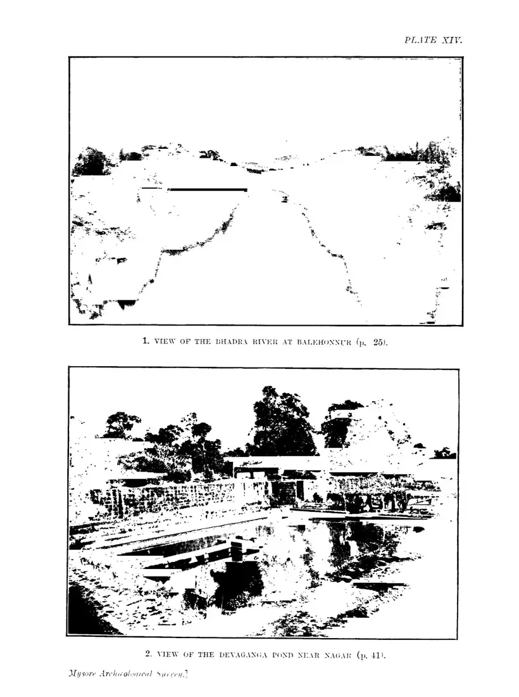
- VIEW OF THE BHADRA RIVER AT BALEHONNUR (p. 25)
- VIEW OF THE DEVAGANGA POND NEAR NAGAR (p. 41)
(28) Dharaṇīvarāha—Anthropoid boar standing with Lakshmī on his hips and having four hands (abhaya, chakra, śankha, holding Lakshmī). Fallen rākshasa (Hiraṇyāksha) on pedestal.
North-West—
(29) Kūrma or Tortoise Incarnation. Life-like, with demon on pedestal.
(30) Matsya or Fish incarnation with Garuḍa on pedestal.
(31) Śiva as Andhakāri. Four hands (abhaya, triśūla, chakra, parrot.)
(32) Mārkaṇdēśvara—Four-handed Śiva spearing with trident Yama who is dragging Mārkaṇdēya with his pāśa. (Pl. XV, 3).
(33) Sōmāskandamūrti—Śiva and Pārvatī standing with Shaṇmukha between them. Bull and peacock on pedestal.
(34) Ardhanāriśvara—Four-handed (abhaya, triśūla, sarpa and dāna.)
(35) Śiva as Tripurāri. Four-handed. Shooting arrow with Buddha at the tip and Vishṇu in the centre, at the tower-like cities of the demons. He is supported by Pārvatī and Brahma.
(36) Śiva as Chandraśekhara—abhaya, paraśu, mṛiga and dāna.
(37) Śiva as Kāmadahana—two-handed. Seated in sukhāsana with the right hand in chinmudrā looking fiercely at Cupid who is shooting floral arrows with his sugarcane bow.
First North Doorway—
North Wall:—
(38) Śiva as Andhakāri. Usual Naṭarāja pose.
(39) Srīkaṇṭha or Vishakaṇṭha—Four-handed. Flame of the poison, trident, drum, dāna. Front right hand holding poison up near the throat.
(40) Vīrabhadra (?) with four hands (sword, trident, mace and spear) with Hanumān to right. Demons on pedestal.
(41) Chandramaṇḍala group—Under an ornamental canopy in a circle is seated in padmāsana, a male god with ten hands—kalaśa, kalaśa, rosary, kalaśa, bell, bell, kalaśa, book, kalaśa, kalaśa. The god is seated in a ratha drawn by horses; two gods with kalaśas on each side. (Pl. XVI, 2).
(42) Śiva standing, four hands—abhaya, paraśu, ḍamaruga and dāna.
(43) Gajāsuramardana.
(44) Hayagrīva group. (Pl. XV, 2). The four-handed god (rosary, chakra, śankha, book) is seated in padmāsana under a canopy with Vaishṇava dvārapāla and a pair of godly disciples on each side.
(45) Annapūrnā—two-handed with ladle and kalaśa.
(46) Pārvatī group. Pārvatī in the centre with a Śaktidvārapālikā and Lakshmī on the right and another dvārapālikā and Sarasvatī on the left. Near Sarasvatī is a mother carrying child on her hip.
(47) Lakshmī standing (abhaya, chakra, šankha and dāna).
(48) Šiva as Kāpālika (?)—four-handed with sword, trident, drum and bowl.
Second North Door—
North-East Wall —
(49) Kubēra—four-handed—abhaya, mace, kalaša, dāna. Horse on pedestal.
(50) Ēsvara—four-handed, holding sword, trident, drum and kapāla with severed head. Bull on the pedestal and consort to left holding trident and bowl. Both the gods wear garlands of skulls.
(51) Bhṛiṅgi—three-legged and skeleton-bodied, dancing with rod in hand. (Pl. XV, 4).
(52) Bhairava—four-handed, with scorpion on pedestal.
(53) Vīrabhadra—four-handed, with Dakshabrahma to the right and Nandi on pedestal.
(54) Šiva standing—four hands—abhaya, trident, drum and dāna. Nandi on pedestal.
(55) Šiva standing—abhaya, goad, drum, dāna—with consort to left and bull on pedestal.
(56) Veñkaṭeśa—four-handed—dāna, chakra, šankha, kaṭihasta. Lakshmī to right and Garuḍa on pedestal.
(57) Vyāsa (?)—two-handed with chinmudrā and kaṭihasta, wearing conical kirīṭa and yajñōpavīta and short dhōti .
(58) Šankarāchārya—two-handed (right, dāna-mudrā (?); left, palm-leaf book). The head is clean shaven.
(59) Vīrabhadra—two-handed, holding vīṇā in left hand and asking for something in the right. To his left stands a two-handed god with chinmudrā and kaṭihasta—perhaps Šiva teaching vīṇā to Vīrabhadra.
(60) Dancing Gaṇeśa with mouse on pedestal.
(61) Shaṇmukha standing—abhaya, spear, parrot and dāna. Plain pedestal.
These large figures are generally under some kind of tōraṇa, but the more important of them are enshrined in niches whose ornamental towers are borne on square or indented square pilasters. Indented square pilasters also ornament the upper portions of these walls whose chief feature is their indented corners.
The eaves which are double as in the Hoysaṭa temples have knoblike drops at their fringes and chains of stone at some of the corners.
Eaves
Tower; Doorways
One of these has six links. The eaves have the apologies for ribs on the inside. The roof is of stone sloping down
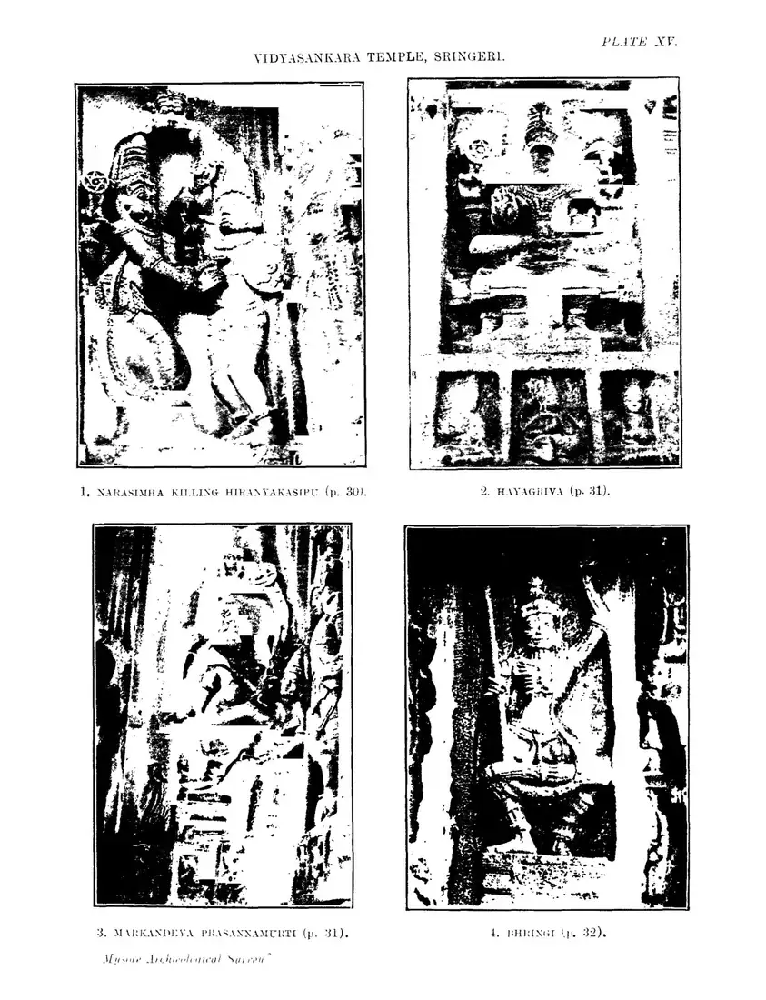
- NARASIMHA KILLING HIRANYAKASIPU (p. 30)
- HAYAGRIVA (p. 31)
- MARKANDEYA PRASANNAMURTI (p. 31)
- BHRINGI (p. 32)
by stages and weli jointed so as to prevent leakage of water. Stone conduits are also provided.
Navaraṅga
Chālukyan; Dravidian and Indo-Aryan elements in the Vidyāśankara Temple; Janārdana Temple; other temples
No heading in the body: this section starts at its printed page (33-34).
The tower is a remarkable architectural piece combining the features of the Chālukyan, Draviđian and the North Indian styles. It is made up of three sets of cornices rising in a step pyramid fashion. Each cornice has ornamental drops on its fringes and the topmost one has small stone bulls facing the cardinal points. The pyramid is broken by three storeys of the Draviđian type. The śikhara on top and its grva are too small according to Chālukyan proportions. There is a suggestion of a curvilinear outline with North Indian parallels. The finial is a large golden kalaša with four smaller ones around unlike the stone ones of the Chālukyan period. The tower has a large frontal projection in front with a kīrtimukha having an image of Śiva standing as Sadāśīva (abhaya, paraśu, mrīga, dāna).
The building has six doorways, symmetrically placed, three in the east half and three in the west half or one each in the east and west and two each in the south and north. Each door is approached by a flight of seven steps supported on either side by a lion or a lion with a creeper emerging from its mouth. Each door is supported by a dvārapāla and the jambs have vertical scroll and floral bands. Compared with the rest of the temple, their designs are not striking. On each jamb is a river goddess on a makara and on the lintel is carved Gajalakshmī. The three back doors lead into the pradakshinā while the three front ones give access to the navaraṅga hall. Each door has supporting dvārapālakas two of which are Śaiva, two Śākta and two Vaishṇava.
The building is peculiar in not having either a mukhamanṭapa or a porch.
The navaraṅga is a structure having twelve highly ornate pillars of the Draviđian type. Each pillar has an ornate base, a square shaft with numerous carvings on the cubical mouldings and mango drop pendent brackets on the back sides and a large bracket group on the front side. Each of these groups has smaller groups like an elephant with upraised trunk at bottom, a large rearing lion with a heroic rider in the middle and a heavy projecting bracket of elephants, lions and śarabhas above. The whole pillar is generally a highly ornate piece, perhaps too heavy in its brackets. On the back sides each pillar has an ornamental pilaster rising out of a kalaša; and each bears the image of a sign of the Zodiac after which it is called. It is said that sun light falls in the early mornings upon the Ram pillar during the month of Ares and on the Bull pillar in the next month and so on. Numerous minor points call for remarks. The elephants have chain accoutrements. The lions have large stone balls in their mouths and these can be rolled, though they cannot be taken out. The bridles of the lions are held by riders wearing conical
5 kirīṭas or round-shaped turbans and holding either weapons or flowers or with upraised hands.
The central ceiling of the navaraṅga is more than sixteen feet high and this result is achieved by a corbelled construction, the weight being poised upon the very heavy brackets. The central ceiling has a fine design with a padma in its dome and a large pendant, the chief ornamentation of which are birds pecking at the bud in an upside down posture.
At the back of the navaraṅga there are three doors leading into the pradakshiṇa, the main door having two Śaiva dvārapālas. The pradakshiṇa is a narrow passage, about 4\frac{1}{2} feet wide, which goes round the sukhanāsi and garbhagriha. In this pradakshiṇa, facing south, west and north are three niches having respectively Brahma, Vishnu and Mahēśvara. The sukhanāsi doorway leads into the sukhanāsi which leads on to the garbhagriha. In here is a large pedestal with a high linga known as the Vidyāśaṅkara linga. The five gods of the five cells around the garbhagriha are, from the south-east, in order, Vidyā-Gaṇapati, Brahma, Vishnu, Mahēśvara and Durgā. The sukhanāsi doorway is supported by Nandikēśvara on the south and Bhrīngi on the north. The former has four hands (abhaya, triśūla, ḍamaruga, and gadā with a serpent mounted on it). The face is that of a monkey with phālāksha.
The image of Vidyā-Gaṇapati very much resembles a Hoysaṭa one, but appears to be of granite.
Brahma is four-headed, the three front ones being beardless and the back head being bearded. Sarasvatī is on his thigh with rosary, padma padma, and dāna in her hands, and swan on pedestal.
Lakshmīnārāyaṇa with four hands: abhaya, chakra, śankha and round Lakshmī. On the pedestal is Garuḍa. There are no avatāras carved on the tōraṇa.
Umā-Mahēśvara with four hands: abhaya, paraśu, mṛriga, and round consort Bull on pedestal.
Eight-handed Durgā as Mahishāsuramardinī on lion pedestal.
The figure of Kāla-Bhairava is also in the same cell. Both are small images.
Chālukyan. —The apsidal ends, the indented corners, the absence of mukhamaṇtapa, the plinth or platform for pradakshiṇā, the friezes of horses, elephants, lions, etc., carved on the basement, the pilasters, niches and large images of the upper wall, the double roof, the stone tower of the stepped pyramid type with its frontal projection and the general impression of the whole structure are Chālukyan features.
Chalukyan, Dravidian and Indo-Aryan elements in the Vidyasankara temple.
Draviṇjian. —The inner pradakshiṇā around the garbhagriha, the designs of the balustrades supporting the steps, the rope-shaped cornice, the three storeys of the main tower, the metallic finials on the top, the drapery of the dvārapālas and other
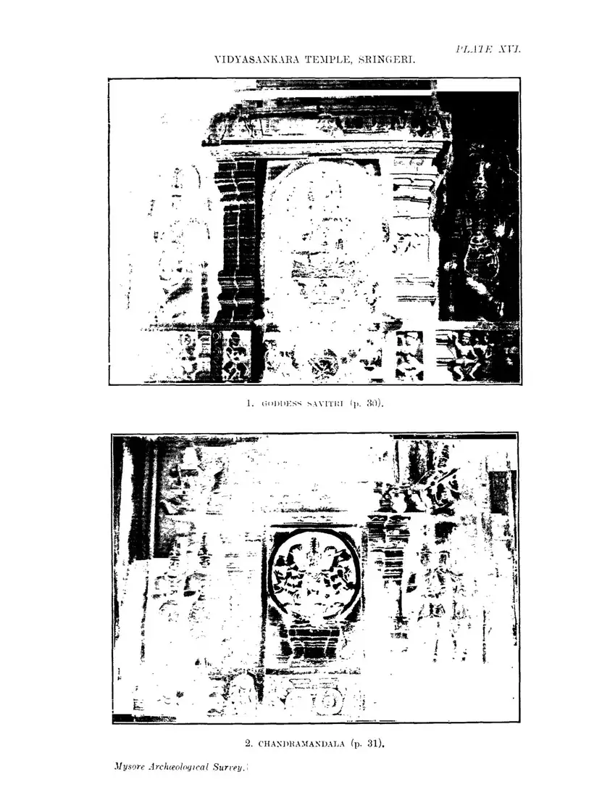
- GODDESS SAVITRI (p. 30)
- CHANDRAMANDALA (p. 31)
images, the breast bands of the female images, the great pillars of the navaraṅga with their heavy brackets of elephants trodden upon by rearing and ridden lions, the use of granite instead of soapstone and the general absence of round pillars, pilasters, etc., are Draviđian features.
Indo-Āryan. —The tower with its curvilinear suggestion and the doorway reached by high flights of steps and the low pyramidical top of the navaraṅga are suggestive of Indo-Āryan features.
There is an intentional mixture of styles. But the external aspect of the building is more Chālukyan and the internal aspect more Draviđian.
JANĀRDANA TEMPLE.
The small temple of Janārdana directly to the north of the Vidyāśankara temple appears to have been constructed in the reign of Bukka or Harihara before 1386 A.D. It has a garbhagriha, a sukhanāsi, a small navaraṅga and porch flanked by a Garuđa shrine on the north and Hanumān shrine on the south. The pillars have sixteen-fluted shafts connecting two cubical mouldings with wheel-shaped top moulding. The roof is peculiar in that its side anikaṇas are sloping out as in the Pārṣvanātha basti at Haļebīđ. There is nothing architecturally remarkable about the temple. The frontal porch is of three anikaṇas.
Behind the Vidyāśankara temple are seven other smaller temples in which are enshrined lingas in commemoration of the earlier gurus of the Šringeri matt. They are not architecturally important and their pillars are mitations of those of the Janārdana temple. They are mostly of the 16th and 17th centuries. Their towers are often of the stepped pyramid kind with projections over the sukhanāsi.
Other temples.
Šārada Temple
Āgumbe; Gōpālakṛishna Temple
The chief deity worshipped in Šringeri is Šāradā, the goddess of learning. There was a small temple for her to the north of the Vidyāśankara temple. This was replaced in recent years by a large stone structure which was commenced in 1906 and completed in 1915. Since the Mysore Palace was being finished, its sculptors and architects were brought over to Šringeri to work at this building. Many of them were Tanjore men trained in the Madras School of Arts and a few were from Bombay and Rajaputana.
The plan is an adaptation of a Draviđian temple, the main changes being the covering of the prākāra courtyard and an open rangamanṭapa. The temple now has a small shrine of polished black basalt or Turuvekere-kallu similar to the material of the pillars of Hyder Ali's tomb at Seringapatam. The rest of the structure is of fine grained granite (obtained from a quarry a few miles away from Šringeri). There is a narrow open pradakshinā around the main shrine which is extended eastward to form the raṅgamanṭapa (Pl. XVII, 3). Outside this manṭapa is the prākāra courtyard surrounded by a pillared verandah which develops in the east to a mukhamanṭapa with a pātālānkaṇa uear the doorway. The width of the central aisle is about 20 feet and is very impressive. To the east of the main doorway is a small porch.
This porch is a Draviđian structure and the mukhamanṭapa is also similar in character. It consists of composite Draviđian pillars with three sets of brackets, the lowest being floral of the Greek pattern, the second a lion bracket, and the third one, a makara with pendent mango buds. Some of these have pecking parrots in an upside down posture. The pillars are interestingly designed, the brackets being generally in imitation of those of the navaraṅga of the Vidyāśaṅkara temple.
The pillars of the prākāra verandahs are Draviđian and less ornate.
But all the skill of the modern sculptor has been lavished upon eight of the ten pillars of the raṅgamanṭapa, the easternmost pair of these having relievo sculptures, nearly six feet high, of Pārvatī (south—abhaya, deer, damaruga with cobra and dāna) and a goddess (abhaya, mounted rosary, padma and dāna on the north). The westernmost pillars have female dvārapālikās. On the pair next to them on the east are rearing lion brackets. But of the second pair from the east, expected to be the finest, the north pillar has a figure of Mahishāsuramardinī with the head of a buffalo on the pedestal and the figure of a lion behind the standing goddess. The goddess herself has eight hands (abhaya, dagger, arrow, chakra, śankha, bow, buckler and kaṭihasta). The details are carefully carved but the image is sadly lacking in proportion, the body being too broad, the head too large and the legs too short for the size. The grandest sculpture is that of Rājarājēśvarī on the corresponding pillar to the south. She is seated in sukhāsana. wears a crescent-bearing crown and several garments some of which have rose flowers. Her four hands have spear (?), combined goad and mace, sugarcane stalk and a modern adaptation of the pāśa. Over her head is a Gandharva lady whose face, limbs and wings, bare breasts, loose nipples and the laurel leaves and flowers held in her hand declare her to be a European intruder in what is expected to be an atmosphere of Indian spiritualism. The goddess below her right elbow has an imitation of a gorgon's head.
The main shrine is comparatively less ornamental. Its wall has octagonal pilasters with occasional round pilasters and mango drop brackets. The surface is well polished and on the basement cornices are uncarved outlines of imitation kīrtimukhas.
For a description of the main image see Mysore Archæological Report for 1916, page 15.
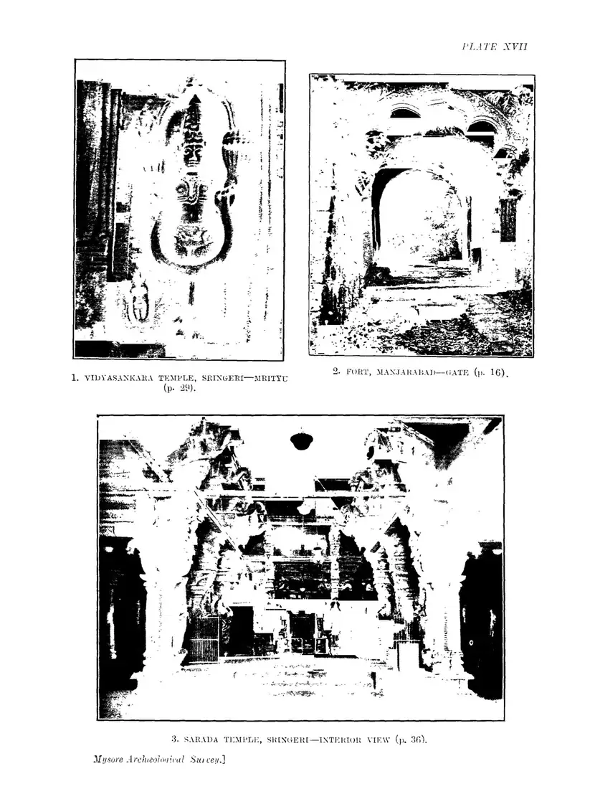
- VIDYASANKARA TEMPLE, SRINGERI—MRITYU (p. 29)
- FORT, MANJARABAD—GATE (p. 16)
- SARADA TEMPLE, SRINGERI—INTERIOR VIEW (p. 36)
On the whole this temple is a curious mixture of European elements with what are expected to be Draviđian architecture and sculpture. For the lay public it has a great impressiveness. But the artist and especially a student of sculpture cannot help feeling disappointed. Few of the imitations of ancient sculptures here have risen to the standard of the grace and the loveliness of a single Hoysala image. The Indian form is there often; but the spirit of the Indian art is conspicuously absent.
AGUMBE.
GÖPĀLAKĒRISHŃA TEMPLE.
The temple of GöpālakĒrishna which has two modern courtyards, is one of granite with a garbhagrīha, a pradakshiṇā, and a navaraṅga of four pillars. The porch is a recent addition of inferior quality. Excluding the porch, the general plan of the building is a perfect oblong, the length being twice the breadth. A sloping set of slabs forms the eaves, while the tower is of the stepped pyramid kind. A flight of four steps flanked by lion heads leads up to the main door which is guarded by two Vaishṇava dyārapālas with cobras entwining the maces and wearing tiaras of the stepped kind. A Gajalakshmī is found on the panel above the lintel and further, on the beam, is a monkey in an obscene attitude.
The navaraṅga has a large central square. The pillars are square in shape with sixteen-fluted shafts and cubical mouldings wearing human, bird and other ornamental designs with a wheel-shaped moulding near the top. The central ceiling is flat and has a fine reliefo padana. There is nothing remarkable in the pradakshiṇā which is about two feet wide only.
The chief object of interest in the temple is the fine image of Vēnugöpāla of dark stone carved in imitation of Hoysala sculpture (Pl. XII, 3). The god is four-handed holding chakra and śankha in the back hands and playing on a flute with the front hands. He wears a variety of garlands and other ornaments, a stepped tiara, waist bands with hangings, anklets, wristlets, etc. Behind him a seven-hooded cobra raises its hoods, each head bearing a vīrarēkhā and a crest jewel, and above it there is a lion head under a conventionalised but finely designed tamāla tree. The god wears shorts and a cloth girdle also. On both sides of him and intently listening, stand groups of animals among which may be distinguished cows, deer, buffaloes, stags, lions, tigers, elephants, cobras and cowherds. To his right and left stand his two-handed consorts, wearing breast bands, kirīṭas, etc. Two pilasters of the indented square kind support the tōraṇa arch whose creeper scroll has in the convolutions the ten avatāras, viz. , anthropoid Matsya, anthropoid Kūrma, animal Varāha, seated Narasimha, seated Vāmana, seated Paraśurāma, seated Śrī Rāma, seated Halāyudha, baby Krīshna on all fours, and seated Kalki with the head of a horse. On the outer edges of the arch are two pecking birds with straight beaks and longish tails—not parrots. The whole is of a single piece of stone about 5\frac{1}{2} feet high and is placed upon a granite Garuđa pedestal. The face has a pointed nose and an archaic smile, conventionalised eyebrows, large prominent eyes and vīra-rēkhā. Though the face does not have the characteristic beauty of Hoysaļa images, the piece is worked up in every detail including the finger nails and is a very faithful imitation of Hoysaļa work. It may perhaps be safely attributed to the earlier part of the Vijayanagar period when Hoysaļa art was yet living, though in a declining condition. The figure is well proportioned and is a remarkable piece when we consider that it was produced in the Vijayanagar period.
Part II: Study of Ancient MonumentsMeļige
Anantanātha Basti; General Description; Pillar; Mahādvāra; Manṭapas; Mānastambha; Conservation; Venkaṭaramaṇa Temple; Chauki-Hoṇđa; Humcha; Pāršvanātha and Padmāvati Bastis; Panchakūṭa Basti
ANANTANĀTHA BASTI. 1
Mēļige is now an insignificant village six miles to the south-east of Tīrthahaļli. It has a temple of Veňkaťaramaņa and a Jain Basti dedicated to Anantanāthasvāmi. According to the inscription in its mukhamaņtapa, the latter was rebuilt in stone about 1608 A.D., so that we are definite about the date of its architectural features. This fact would help us to date the style generally prevalent in the Malnāđ and assign it to the Keļadi period.
The basti is entered by the side of a mānastambha through an upparige or dvāramaņtapa and the main structure consists of a General description. straight-sided oblong structure with a wide garbhagrīha, a wide sukhanāsi, a navaraņga of nine squares, and an open mukhamaņtapa, also of nine squares. To this has been added a porch of four pillars, which is reached by a flight of steps flanked by spiral design.
The pillars of the temple are generally square bottomed and tapering with sixteen flutings, those of the porch having straight-sided shafts and the others with the pot and other mouldings. Pillars. All of them have the wheel moulding and the front pillars of the mukhamaņtapa have brackets of rearing lions treading on elephants. The mukhamaņtapa pillars have varied relievo carvings like trunked horse-headed swans, seated deities, etc.
The ceilings are shallow domes of the lotus design. The bud of the mukhamaņtapa ceiling has transversely carved lines meeting at the point. A doorway defended by two dvārapālas and having a Jaina figure on the lintel leads into a comparatively plain navaraņga.
The sukhanāsi and garbhagrīha are almost bare and on a vacant pedestal in the latter once sat the image of Anantanātha, which has now disappeared.
1 Briefly described in M. A. R. 1929, p. 5
Among the ornamental designs used in the temple, particularly for rosettes, are varied śrī-chakra designs and wheel-form lotuses.
The eaves are formed of very large flat slabs placed slopingly, the joints being guarded by tile-shaped protectors of stone.
The tower is a stepped pyramid of dentil cornices with the usual tall neck and small head of stone on which is a stone kalaśa.
The dvāramanṭapa has a verandah inside and a porch outside. But this mahādvāra which is a comparatively small one has a pointed mihrab-like arch showing Meslem influence. In the cubical base of either of the pillars of the front porch leading to the mahādvāra are carved nāgabundhas as at Chunchankaṭte. The parapet walls above the mahādvāra have corner minarets and trefoil battlements as in Moslem mosques.
Mahadvara.
At the south-west end of the courtyard behind the temple stands a small manṭapa housing a two-handed god (abhaya and gadā).
Mantapas.
A similar pavilion on the north-west has a finely worked four-handed image of Indra standing on an elephant joining his front hands and holding up in his back hands a large padma.
The finest architectural piece in the temple is the mānastambha in front. It stands on a platform formed of four different tiers, which
Manastambha.
together rise to a height of about nine feet; and it has a square base developing into an octagon, all the faces of which are carved over with relief figures and designs. From the octagon rises a long sixteen-sided shaft bearing a pot-shaped moulding covered by finely ornamented wheel-bearing lion brackets which are upholding a padma whose fringes have knot drops. On the padma is a platform above which there is a miniature shrine with pointed arch doorways, step pyramid tower and a square stone śikhara. At each corner of the platform is a miniature niche with a similar doorway, tower, head and finial. This little shrine is significantly worked and beautifully poised on the top of the pillar which itself rises grandly out of its majestic platform. Under each of the four arches of the tower stands a naked Jaina image. This pillar is perhaps the best old pillar in the Mysore State, surpassing in design even the famous pillar standing on the Chandragiri hill of ŚravaṇabeĪagoļa. This pillar has been copied with modifications in the memorial pillar set up recently at Kṛishṇarājanagar or New Yeđatore.
The building needs to be kept clean and the compound cleared of creepers. A small allowance of Rs. 2 may be given to some person
Conservation.
definitely entrusted with this task, or a Jain deity may be installed and a family entrusted with the maintenance of the temple. A better view of the mānastambha can be obtained if the compound is extended by 20 yards more or lowered by about three feet.
VENKAŹARAMAŃA TEMPLE.
The Venkaṭaramaṇa temple in the heart of the village of Mēlige is a structure of the 17th century and of granite having a garbhagrīha, a navaraṇga and a front porch with pillars as in the Basti. The tower is a stepped pyramid as in the other temple. The image of Venkaṭeśa is of black stone as at Āgumbe, and the same style is continued here.
CHAUKI-HOŃDA.
The Chauki-hoṇda pond, also called Dēvagaṇgā, is very well supplied with water by five wells, of which three are visible and two buried. Near the pond was secured a small Jaina image of pot-stone, which, presumably, belongs to the Basti of the village.
HUMCHA.
THE BASTIS.
In the compound of the Pārśvanātha Basti is also the Padmāvatī Basti. Both of these appear to have been rebuilt of granite in the Keļadi Parsvanatha and Pad-mavati Bastis. style, a few materials of older Hoysaļa and Chālukyan temples, particularly pillars and a fine tōraṇa doorway being used. The four-pillared pavilion in front of the Pārśvanātha Basti is the oldest structure in the place. In front of it is the tōraṇa with a fine lintel.
In the compound are numerous images of which three—a pair of dvārapālas and a lion—date from the 11th century or even earlier.
The Pañchakūṭa Basti is an important Jain temple constructed in the Chālukyan style in the 10th or 11th century A.D. Of this old Panchakuta Basti. Basti now remain the fine Mānastambha, the tōraṇa doorway, the colossal dvārapālas and a few of the sacred images. To the Hoysaļa period appear to belong the porch-manṭapa, a large number of the mukhamaṇtapa pillars and some of the images, particularly the Yakshīs, Padmāvatī and Kūshmāṇdinī. The rest of the temple appears to have been rebuilt of granite about 25 years ago. This new work is plain. But the older pieces are very artistic.
The pillar, the porch-manṭapa, the Chālukyan tōraṇa and the images inside deserve protection and conservation.
Nagar
Dēvagaṅgā Ponds; Conservation
DĖVAGAŃGĀ PONDS.
Nagar or Bednore was the last capital of the Keładi dynasty and was a very prosperous place in the 18th century until it was captured by Hyder in 1763 A.D. The chiefs appear to have lived in considerable comfort and luxury and one of their achievements in this direction was the selection of a little natural stream flowing down from the horse-shoe-shaped valley about a mile to the north of Bednore and a construction of a number of tanks and wells in a large courtyard of about 285' \times 98' to which flights of steps lead down from the east and from the west. At the north end of the court is the largest of the tanks (Pl. XIV, 2) which is about 83' \times 58' . It is only about 5' deep, the water being about 10' only, the sides being stone built and the bottom paved with stones. From the north end a narrow bridge leads to a low platform which offers a fine seat during the cool hours and perhaps a jumping platform when the sun is warm. The tank has plenty of fish of various kinds. A stone drain leads the water southward to a second tank which has a square bottom. This and the other tanks of the place are all small ones. Between the first and the second tanks are stone pillars which were perhaps meant to receive covering of cloth or of green leaves. Including the largest there are seven of these tanks, two of which have peculiarly shaped bottoms, one having the padma shape and the other a star shape. At the south end is a bathing place paved with stones.
The western flight of steps leads up from the courtyard to a small linga shrine round which there is an oblong basement of what must have been a building with an open inner yard. Probably here were the living rooms or the kitchen, etc.
The DēvagaŃgā ponds are situated in a charming locality and were once the sporting ground of royal families. They are now preserved by the Mysore Government as Protected Monuments.
Near the south-west corner there is a small square depression in the masonry from which a concealed drain leads the water out of the courtyard. The inlet and outlet are both to be repaired.
Conservation. The Mysore Palace are paying the caretaker Rs. 7 a month through the Revenue authorities. He is keeping the place neat and clean with a small flower garden. The whole area may be cement-pointed. The water should be drained off and the place cleaned. Worship may be arranged at the temple. The fountain should be examined by the P.W.D.
Fort
Nilakaṇṭhěsvara Temple; Ānjanēya Temple; Guđđe-Venkaṭaramaṇa Temple
The Fort of Śivappanāyaka is entered by a gateway (Pl. XVIII, 2) supported by two round bastions and having a sally port on the left side. By the side of the
6 sally port is the design of a Draviđian tower with seven kalašas. Opposite to the tower is a niche.
On the inside, one of the pillars of the high jagalis on either side contains, in high relief, the figure of Hanumān sitting on his tail with his right fore-finger lifted up as if in warning.
The courtyard inside shows signs of a former guard room with another short wall inside. The path passes through another wall just on the east taking a ' Z' shape.
The outer wall is well supplied with a high parapet of laterite blocks having musket holes and cannon mouths at the corners.
A little further up is a very large well divided into compartments provided with flights of laterite steps. There appears to have been formerly a water lift perhaps for storing water further up and supplying it through a drain. The arrangement resembles that in the old fort at Ikkēri.
The third inner wall is now entered by a breach. At some distance is lying a mutilated stone elephant, well caparisoned.
Inside the third wall is a large open court, facing which is a terrace overlooking the west. Here appears to have stood the fort palace or citadel of Šivappanāyaka with an octagonal well (3 feet in width) a little distance from it. There are two stone tablets set up here. The smaller one has the words :
“ This tablet
Marks the site of the Palace of
Sivappa Naik
Chief of Bednur
1648-1660.”
The larger one which evidently has been set up recently bears the words :
“ This is the site of Durbar Hall of Sivappa and his successors 1649-1763.”
This tablet is in the wrong position. It ought to be removed and set up on the Palace site to the north of the fort.
Between the first wall and the second on the south-west side is a powder magazine, with the roof and walls ruined. Some distance from it is another round bastion in the first wall.
Following up the line of this wall we ascend a flight of steps and reach another bastion to the north of which is the batēri which served the purpose also of an observatory. A broken cannon is lying on the top of the batēri.
On the north-west are two more bastions provided with bay windows on all the sides, some of them having pillars with lion brackets. The middle bay window of
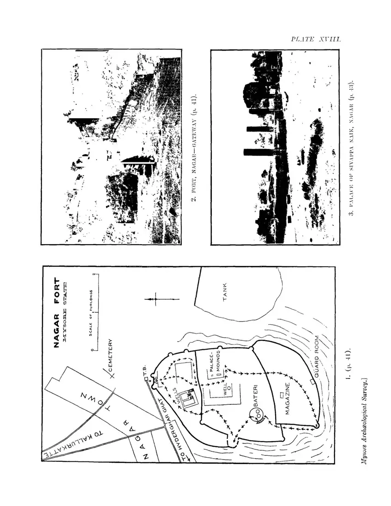
- (p. 41)
- FORT, NAGAR—GATEWAY (p. 41)
- PALACE OF SIVAPPA NAIK, NAGAR (p. 43)
the first bastion on this side is directly opposite the Nīlakanthēsvara temple so that it was possible for the inmates of the palace to obtain a good view of the procession of the image.
Further up on the extreme north-west of the fort wall is carved the relief figure of Hanumān with lifted tail.
On the whole there are about nine bastions, and a moat runs all round.
THE TEMPLES.
There are about four temples in Nagar which are all of the Nāvak period and subsequent times. The Nīlakanthēsvara temple is typical Nilakanthesvara Temple . of Malnāđ architecture in that it has two high jagalis in front and has a garbhagrīha, a wide sukhanāsi and a wide navaraṅga. The garbhagrīha only is of stone and the tower is quite like a Moslem dome, the only difference being that in the place of the minarets at the four corners are kalaśas. The ceiling of the garbhagrīha is square with a padma medallion.
There is a black stone ( Tururekere-kallu ) bull in the navaranga, well-carved, though out of proportions.
The goddess' shrine has an image of Pārvatī rudely executed and reminds us of the Apita-Kuchāmbā and Girijāmbā images at Nandi.
The Ānĵanēya temple is now almost gone excepting for the existence of the high platform and the two stone elephants which flank either side of the flight of steps. These latter are of good workmanship. Anjaneya Temple .
The Gudđe-Venkaṭaramana temple is typically a structure of the Keĵadi type and consists of a garbhagrīha and mukhamanṭapa only. Gudde-Venkataramana Temple . The outer walls and basement cornices have, here and there, figure sculptures, while the garbhagrīha outer wall has a horizontal band as at Dēvayrinda and elsewhere. The garbhagrīha doorway, however, is old and of the Hoysaĵa type. Very likely, it has been brought from elsewhere. There are two big metallic bells, one of which is from Amsterdam (1713 A.D.) and originally belonged to a Roman Catholic Church of the place.
A look at these temples shows that the Keĵadi style of architecture was greatly influenced by Moslem designs.
Palace of Šivappanāyaka
Directly to the north of the fort, facing south-west is a large compound in which stand the ruins of the Palace of Šivappanāyaka and his successors.
It appears to have been in a good enough condition at the commencement of the 19th century when the English garrison stationed in the place commenced to use its central hall as a Catholic Church, arranging in the form of an altar some of the slabs and pillar bases collected from the neighbourhood. The church was in use for a few years until the garrison was removed. Some of the soldiers and others who died during this period were buried at the back of the compound where the kitchen, etc., probably stood. In course of time the church also fell into disuse and became ruined completely. For the spiritual needs of about ten Catholic families of the place and of a total of about thirty Catholic families in the whole neighbourhood, a thatched hut was put up in the south-west corner. In 1924 the question of conserving Śivappanāyaka's Palace site was moved by the Revenue authorities and in 1926 the Director of Archæology inspected the place and made a report proposing that the thatched hut serving as a church should be removed from the compound, etc. This was supported by subsequent officers but opposed by the Lord Bishop of Mysore who declined to remove the thatched church. Thereupon, in 1928, the Director of Archæology proposed that the portion forming the thatched church should be walled off, that a separate access from the north be given to the cemetery, that further burials therein should be stopped, that the rest of the ruins should be taken over by Government, that a tablet be put up and that the question of a future excavation of the place be considered. Government Orders on the subject were issued in 1934 by which time the church authorities replaced the thatched hut with a masonry building covered by Mangalore tiles and removed most of the walls and a large number of pillars, paving slabs, etc., in an attempt to destroy the evidence of the existence of the old Palace and to collect materials for constructing a large church exactly on the site of Śivappanāyaka's Durbar hall. Further in putting up the new tablet which cost Government Rs. 150, the overseer appears to have been frightened by the church authorities and to have put it up as a duplicate tablet on the palace site on the hill fort instead of in the larger palace site where it was intended to be put up. The Catholic authorities have attempted to create a fait accompli and to remove all traces of the famous palace, and they have excavated the ground in numerous places ostensibly for collecting building materials, but really thereby to destroy what remained of the ruins. Since at present there is no church except in the south-west corner, the Church authorities should be definitely prevented from all interference with the ruins. The portion containing the gabled church should be walled off with a separate entrance from the road. The portion where the cemeteries exist may be given a separate entrance from the east. The church authorities have disregarded the Government Order about the stoppage of burials in the place, the last burial being in December 1935. The tablet should be removed from the hill and set up in the raised floor of the central hall of the palace ruins. The church authorities may be forbidden from using the materials belonging
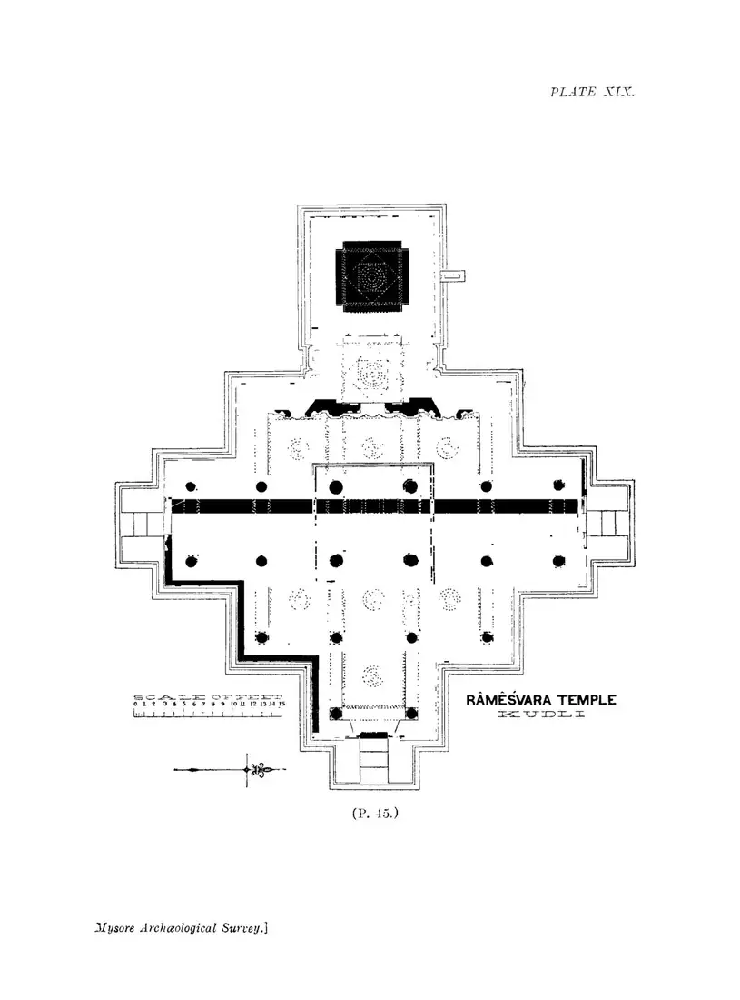
- (p. 45)
Cited in the text: p. 45 ↩
to the palace, old or newly excavated. The question of excavating the area may be considered. Since Bednore was the richest city of the Deccan in its time, it is a place likely to yield treasure trove even. Immediate action is necessary since the church authorities are slyly active.
Part II: Study of Ancient MonumentsKūđli
Nine miles to the north-east of Shimoga, at the confluence of the rivers Tungā and Bhadrā on the narrow tongue of land and its north end, is the village of Kūđli. At the north end of this village stand two old temples of the Hoysala period, the Rāmēšvara and the Narasimha.
Rāmēsvara Temple
The Rāmēšvara temple has been disturbed by repairers. It has a garbhagriha, a sukhanāsi, a navaraṅga of nine ankanas with extension ankanas on the east, north and south, and three doorways (Pl. XIX). There is no other porch or manṭapa. The outside of the temple is rather plain, neither the basement cornices, nor the pilasters outside the walls having any sculptures (Pl. XX, 3). The stone tower has a round stone finial and a frontal projection with a well preserved Sala group.
There is no platform or plinth below the basement. By the side of each navaranga doorway formerly appears to have stood supporting elephants of which only the eastern door has its pair.
Inside the navaraṅga, which is closed, a stone bench runs on all sides. Of the 18 pillars, 16 are of the round lathe-turned type, while two only are cylindrical and sixteen-fluted. The ceilings are also plain and each square has a padma rosette, while the central ceiling which is flat has in its nine panels Gajāsuramardana surrounded by the Dikpālakas. At the back of the navaraṅga are two niches for Gaṇeśa and Mahishāsuramardinī with two other finely designed niches now covered with a thick coat of chunām. In the navaraṅga are also kept a Basava and a Virabhadra and Bhairava which are not remarkable. The perforated screen jambs of some other temple are also used in front of the image of Mahishāsuramardinī.
The sukhanāsi doorway is supported by perforated screens and a Gajalakshmi lintel. Another doorway with also Gajalakshmi on the lintel has on a pītha a small linga known as the Rāmēšvara-linga.
The roof of the temple is cracked and the slabs of the walls have crevices. The roof needs to be remade and the walls and floor cement-pointed. A door may be provided for the north doorway and the payless priest may be given back his salary and emoluments.
Narasimha Temple
The Narasimha temple (Pl. XX, 2) which is only about 20 feet away to the south-west is also about the same dimensions and plan with no doorway to the north. Its walls and pillars are more ornate, the former having turrets and tōraṇas and the latter beaded pendants. But since in the late Vijayanagar period the structure appears to have been carelessly rebuilt, the stones are in a few places irregular. The ceilings are plain except the central one which bears a fine large padma. The perforated screen doorways of the navaraṅga and the garbhagrīha have nothing remarkable about them. Only the image is noteworthy (Pl. XX, 1). It is a wax-covered stone image (about 3' in height) of Chintāmaṇi-Narasimha, the god sitting in virusana and holding in his right hand a small bowl. He has two hands thus disposed: the right one holding chintāmaṇi and the left one placed on thigh. The image is a rare icon and appears to date from a period much earlier than the Hoysaļas. On the god's head is the mark of Prahlāda's hand. The utsavamūrti is Veňkatēša (abhaya, chakra, šankha, kaṭihasta).
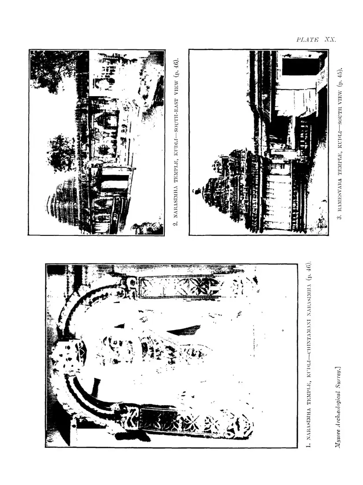
- NARASIMHA TEMPLE, KUDDL—CHINTAMANI NARASIMHA (p. 46)
- NARASIMHA TEMPLE, KUDDL—SOUTH-EAST VIEW (p. 46)
- RAMESVARA TEMPLE, KUDDL—SOUTH VIEW (p. 45)
Part III: Numismatics
Punch Marked Coins
(Pl. XXI.)
In the collection of the Mysore Government, there are 14 coins of the punch marked class to which are added five coins presented recently to the Archæological Department by Messrs. Rao's Circars' Trading Company of Madras.
Among the former many are either rectangular or almost square, only three being of round shape. They are all of silver and though, according to Smith 1 and other numismatists, the full normal weight of the punch marked coins has been said to be about 58 grains or 32 ratis , the lowest weight among these specimens of what we may suggest as one Purana is about 43 grains, while the greatest weight is about 52 grains. There is only one specimen weighing about 28'4 grains which is tentatively taken to be a half-purana. Similarly only one specimen weighing about 12 grains is taken to be a quarter-purana. But one thing may be noticed regarding the weight of these coins, i.e. , they are not uniform—which may be due to the fact that some of them are very much worn out or that no hard and fast rule was followed in this respect. Or it may even be that the metal itself contains in each case different proportions of silver.
Three out of these fourteen coins have blank reverse; five have only one mark each on the reverse and the others, two or more. Coin No. 4 has as many as seven marks on the reverse. All the coins have on the obverse several marks ranging from 4 to 7. The same mark appears twice or thrice in two or three cases. The Sun, Chaitya, Bull and Troy marks are very common; particularly the Sun mark appears on every coin invariably. Among the animals figured on the coins, the Bull is very common. Other animals are the Elephant unmistakably and the Lion and Horse somewhat doubtfully. The fish, whale and centipede are also doubtful but the Cobra with the raised hood cannot be mistaken. The peacock mark is very significant and another mark identified as centaur on coin No. 4 is, however, doubtful. Floral and geometric designs are usual on the punch marked coins, as are the Caduceus and the Taurine symbols. The Hill, River and Fortress marks perhaps refer to localities in which the coins were issued.
On coin No. 13 the legend read, with hesitation, as Sa ga pu is, however, very important. It is in Brähmi characters and suggests a very ancient date for these coins. Some of the coins bear peacock marks; can these be the issues of the Mauryas? The blank reverse of some of the coins indicates earlier date typologically; but it is possible that the round coins are later in date than the rectangular or square ones.
1. Catalogue of the Coins in the Indian Museum, Vol. I, p. 134.
But the five coins recently acquired for the department bear punch marks with either dotted borders or dots sparsely distributed around the symbols. They are all thin and broad, two of them being oval and round and two square. Their thinness makes them easily distinguishable as belonging to a series different from the usual punch marked coins. Three of them have blank reverse while the reverse of each of the remaining two bears four marks, the maximum number of symbols appearing on the obverse of the whole set being also four. The type to which these finds belong has been described by Mr. T. G. Aravamuthan of the Madras Government Museum 1 . Though, at this stage, it would be futile to date these issues, it is suggested, and said to have been agreed to by some of the numismatists, that they are possibly pre-Mauryan 2 . But the thinness of the coins, the degenerate art of the symbols, etc., and some of the highly conventionalised marks appearing on them create a suspicion that they may not be so old as they are thought to be. They have some points in common with the punch marked issues of the Chālukyas and may possibly be intermediate in time between the old puranas and the Chālukyan punch marked coins.
All the nineteen specimens now in the possession of the Archæological Department are described below :—
1. Ag. Shape : Nearly oblong and thick ; size : 1'58 × 1'27 × '227 cms.
Wt. 47'8 grains 3 .
Obverse :—(a) Troy mark. Sphere supporting three arrows crossing behind it, or three Taurine symbols.
(b) Chaitya or Hill mark with a peacock on top.
(c) Sun mark.
(d) Another Chaitya mark ; but hill only partially visible, top not clear.
(e) Peculiar mark - Crozier (?)
Reverse :— Not clear. There appears to be a small flower of six petals superimposed on some other mark.
The existence of two ' Hill ' marks is noteworthy. If, as Walsh says, the hill with peacock is the symbol of a particular place, why should there be another ' hill ' mark without a peacock? Mark (e) on the obverse, if it is a sceptre, may establish the view that punch marked coins were issued by states and not by local bodies.
2. Bad Ag. (?) Shape : Trapezium, meant to be square; size : 1'8 × 1'77 × '11 cms.
Wt. 28'4 grains. Half purana (?)
1. A new type of Purana Coins by T. G. Aravamuthan.
3. J. B. O. R. S. 1919 ; S. I. M. C., p. 132.
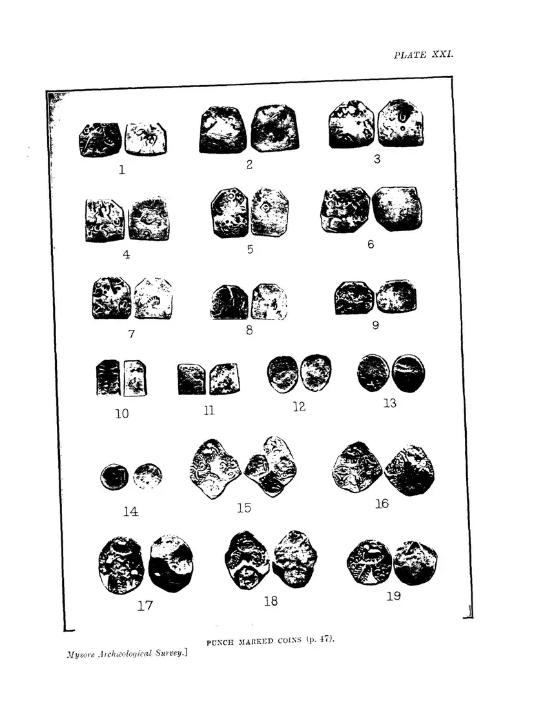
- PUNCH MARKED COINS (p. 47)
Cited in the text: p. 47 ↩
Obverse :—(a) Humped bull to right.
(b) Chaitya mark.
(c) Troy mark (?) partially visible.
(d) On top of Chaitya part of some mark, not clear; perhaps recumbent bull.
(e) River mark.
Reverse :—(a) One square within another—Fort.
(b) Head and humped back of bull or cow, only upper part visible.
Square within square may stand for a fortress. The metal is impure as can be seen by the broken edges of the two fragments glued together with paper.
3. Ag. Shape : Nearly square and thin ; Size : 1·77 × 1·62 × ·133 cms.
Wt. 46·4 grains. One Purana.
Obverse :—(a) Cross with four Taurine symbols ;
(b) Troy mark ;
(c) Chaitya with elephant to right on top ;
(d) Sun mark ;
(e) Elephant to right.
Reverse :—(a) Sun mark ;
(b) Pellet ;
(c) Svastika ;
(d) Scroll (?)
(e) Horse (?)
This specimen and coins Nos. 4 to 10 of this series were found by Dr. Edgar Thurston, Superintendent of the Madras Government Museum, in Bimlipatam Taluk, Vizagapatam District. The elephant and horse are symbols of the Hindu army, and the bull is that of Śaivism.
4. Ag. Shape : Nearly square and thin. Size : 1·65 × 1·56 × ·163 cms.
Wt. 50·6 grains. One Purana.
Obverse :—(a) Sun mark ;
(b) Bull's head to right ;
(c) Troy mark ;
(d) Peculiar figure resembling centaur (?)
(e) Head of fish or whale ;
(f) Another whale (?) doubtfully.
Reverse :—(a) Circle with pellet in centre ;
(b) Arc or curved line, possibly part of some big figure—effaced ;
(c) Another circle with pellet ;
(d) Yet another circle ;
(e) Taurine symbol between two horns curved like horse-shoes ;
7 (f) Part of some uncertain mark of which only the crescent or arch is clear;
(g) Another mark—uncertain.
5. Ag. Shape : Nearly square; Size : 1'83 × 1'43 × 1'78 cms.
Wt. 51'5 grains. One Purana.
Obverse :—(a) Sun mark;
(b) Chaitya with couchant bull on top;
(c) Troy mark;
(d) Standing bull to right;
(e) Rude elephant (?)
Reverse :—Part of some mark effaced.
6. Ag. Shape : Oblong; Size : 1'78 × 1'67 × 1'31 cms.
Wt. 47'6 grains.
Obverse :—(a) Sun mark;
(b) Uncertain mark;
(c) Troy mark;
(d) Appears to be similar to (c) of coin No. 7 which is identified as a Chaitya;
(e) Caduceus (?)
Reverse :—Fortress.
7. Ag. Shape : Square; Size : 1'55 × 1'49 × 1'185 cms.
Wt. 52'6 grains.
Obverse :—(a) Sun mark;
(b) Appears to be a crawling cobra with raised hood.
(c) Chaitya (?) with three tall arches;
(d) Troy mark;
(e) Lion (?) or horse.
Reverse :—Mark like a centipede (?) or like the tree mark appearing on the coins (Nos. 15 to 19 of this series) newly received from Madras.
8. Ag. Shape : Square; Size : 1'38 × 1'34 × 1'213 cms.
Wt. 49'3 grains.
Obverse :—(a) Sun mark;
(b) Troy mark;
(c) Tree with railing;
(d) Chaitya.
Reverse :—Uncertain mark.
9. Ag. Shape : Nearly oblong; Size : 1'52 × 1'26 × 1'210 cms.
Wt. 48'4 grains.
Obverse:—(a) Sun mark;
(b) Flower with six large petals;
(c) Flower with six small petals;
(d) Troy mark;
(e) Bull;
(f) Caduceus (?)
Reverse:—Mark looking like the Arabic numeral '3'.
10. Ag. Shape: Rectangular and thick; Size: 1'42 × '91 × '37 cms.
Wt. 49'4 grains.
Obverse:—(a) Sun mark;
(b) Chaitya;
(c) Troy mark;
(d) Bull to right;
(e) Chaitya (?)
Reverse:—(a) Elephant (?)
(b) Flower.
11. Ag. Shape: Square and thick; Size: 1'2 × 1'16 × '265 cms.
Wt. 44'3 grains.
Obverse:—(a), (b) and (c) Sun marks;
(d) Troy mark;
(e) Indistinct.
Reverse:—Blank.
12. Ag. Shape: Round and thick; Size: 1'4 × 1'2 × '239 cms.
Wt. 43'4 grains.
Obverse:—(a) Sun mark;
(b), (c) and (d) Parts of uncertain marks.
Reverse:—(a) Part of Troy (?) mark;
(b) Chaitya;
(c) Uncertain.
13. Ag. Shape: Nearly round and thick; Size: 1'43 × 1'28 × '239 cms.
Wt. 50'2 grains.
. Obverse:—(a) Lion (?)
(b) Sun mark;
(c) Caduceus (?)
(d) Uncertain, this appears to be a legend of 3 letters reading Sa ga pu .
Reverse:—Blank.
14. Ag. Shape: Nearly round; Size: 1'8 × 1'2 × '18 cms.
Wt. 12 grains; Quarter purana (?)
Obverse :— Indistinct and partly effaced—A figure resembling the gateway of a stūpa.
Reverse :— Blank.
15. Ag. Shape : Nearly square. Size : 1.85 \times 1.73 \times .078 cms.
Wt. 25.2 grains.
Obverse :— (a) Geometrical design formed of three spiral hooks with small circles in the interspaces ;
(b) Elephant to right ;
(c) Similar to (a) ;
(d) Uncertain figure (wheel ?) in dotted border.
Reverse :— (a) Troy mark ;
(b) Square divided into 4 compartments with a dot in each ;
(c) Rude elephant to left with sun and moon above ;
(d) Similar to (b).
16. Ag. Shape : Nearly square ; Size 1.74 \times 1.7 \times .075 cms.
Wt. 23.8 grains.
Obverse :— (a) Lizard ;
(b) Three pellets linked by curved lines in dotted border ;
(c) Rude Tusker elephant to right with 2 pellets above ;
(d) Similar to (b).
Reverse :— (a) Tusker elephant to right ;
(b) Similar to (b) on the obverse ;
(c) A crab-like figure ;
(d) Similar to (b).
17. Ag. Shape : Nearly oval ; Size 2.16 \times 1.66 \times .076 cms.
Wt. 26.6 grains.
Obverse :— (a) Tree ;
(b) Conventionalised Troy mark ;
(c) Tusker elephant standing to right ;
(d) as (ö).
Reverse :— Blank.
18. Ag. Shape : Nearly oval ; Size 2.17 \times 1.72 \times .055 cms.
Wt. 17.6 grains.
Obverse :— (a) A plough drawn by 2 bullocks ; one bull clear, the other doubtful ;
(b) Elephant to left (?) with dots ;
(c) Tusker elephant to left with sun and moon above ;
(d) Indistinct with numerous dots and dotted border. An oval figure surrounded by dots between two crescents, the whole being surrounded by another line of dots. This corresponds with (e) on the reverse of 4.
Reverse :— Blank.
19. Ag. Shape: Almost round; Size: 1'68 \times 1'65 \times '092 cms.
Wt. 26'7 grains.
Obverse:—(a) Geometrical pattern formed of six circles with the 7th in the centre:
perhaps lotus;
(b) Tree;
(c) Similar to (a);
(d) Tusker elephant to left in dotted border with Sun and Moon above.
Reverse:—Blank.
Part IV: Manuscripts
Mahiśūru Samsthānada Doregaļa-Pārampare Kaiphiyattu
KAIPHĪYATTU.
This is one of the manuscripts obtained from Ināmdār Karṇīk Lakshmīnarasiah of Tumkur, whose ancestor Nallappa is said to have been serving in the Mysore Court during the days of Krīshṇarāja Wođeyar III. There is no indication in the manuscript itself as to when or by whom it was written; but judging from the fact that it stops short with the accession of Krīshṇarāja Wođeyar III in 1799, we may ascribe it to about 1800 A.D.
While it has its value as a chronicle, like those already known, it has to be observed that it is too short and scrappy and cannot therefore be much relied upon. In a way it follows the order of narration in the Annals of the Mysore Royal Family published by the late B. Ramakrishna Rao twenty years ago. But it is not so exhaustive; nor is the chronological order of events correctly given: the Śaka year mentioned is, in many places, behind the given cyclic year by about two years. The cyclic year is generally correct while its other details are often different from those given in the Mysore Annals. A few points of historical matter, however, appear to be new; but these are of minor importance only and require, moreover, corroboration in several cases. The manuscript is little more than a mere list of the Mysore rulers and of their conquests and is lacking in chronological precision and historical detail.
At the beginning is given a very brief account of Lord Krīshṇa's appointment of His sister, the goddess Chāmuṇdā as the patron deity of the Mysore Branch of the royal family of the Yādavas. Yadurāya is simply mentioned as one of the dynasty, no reference being made either to his migration to Mysore from the distant north nor to his exploits, military and romantic, in the south. His brother Krīshṇarāya is not at all mentioned. It is stated that the king was a devotee of the god of Nārāyaṇagiri and that, therefore, the hill came to be known as the Yādavagiri and Melukōṭe (supreme fort or the fort on the hill).
Hiri-Chāmarasa Vađeyar, the fourth king, had six fingers—a fact not stated in the Annals but known from other sources 1 .
The sixth king Timmarāja Vođeyar who gained the title of Antembaraganda, bought Tippūr from the temple authorities at Kañchi and gave it away to the Melukōṭe temple. This fact is not stated elsewhere.
Krīshṇarāja Vođeyar, a son of Hiri-Beṭṭada Chāmarāja Vođeyar, the fifth king, is stated to have succeeded his brother Timmarāja Vođeyar, the sixth king, on
(1) See Wilks' History of Mysore, Vol. I—p. 21. the throne and won the title of Śringārahāra while he was king. The Annals state that he did not rule, but that he won this title during his father's regime. It is, however, possible to explain away this discrepancy of detail, for the Annals state that all the three sons of Hiri-Beṭṭada Chāmarāja received territories and the author of the present manuscript may have committed the mistake of referring to a mere administrator as a ruler. Wilks says that a partition was actually effected among the three sons 1 . The Annals assert that Timmarāja Vođeyar was crowned king during his father's life time and that his brother Bōlā Chāmarāja Vođeyar was further nominated as his successor 2 .
Rāja Vođeyar, the ninth king, is stated to have been the eldest son of Bōlā-Chāmarāja and to have succeeded his brother Betṭada Chāmarasa as the latter proved himself incompetent to rule. The Annals state that he was the second son 3 by the eldest queen and that he succeeded his brother Betṭada-chāmarāja who abdicated the throne in his favour 4 . Some facts relating to the misunderstanding and the consequential quarrels between the brothers are given in the manuscript and confirm the account given by Wilks 5 . There appears to have been some trouble connected with the financial resources of the country and the compulsory retirement of Betṭada Chāmarasa was perhaps inevitable circumstantially. The dethroned king seems to have reconciled himself to what was done and to have settled in Raṅgasamudra later on since the son of Rāja Vođeyar was hostile to him and had even attempted to put out his eyes.
While describing how Rāja Vođeyar came to acquire Seringapatam from a vassal of the Vijayanagar Empire, the manuscript gives an account of the installation of the god Raṅganātha on the island through the austerities of the sage Gautama and of the subsequent neglect and the consequent dilapidation of the shrine until the image was discovered by a dancing girl (through her cow). She built for the god a new temple where, before long, a Brāhman, as directed by providence, arrived for worship, completed the building of the temple, put up a new shrine for the god Tirumaladēva to the west of the Raṅganātha temple, changed the course of the Kāvēri westwards in Ś 816 Ānanda, corresponding to 894 A.D. and built the fort which he named Śrīraṅgapura. A line of Daṇāyakas called elsewhere the nava-dhaṇāyakas 6 ruled the place subsequently, whose names are mentioned as follow :—
1. Timmaṇṇa Dhaṇāyaka.
(1) Ibid .
(2) Annals of the Mysore Royal Family p. 15.
(3) Ibid , p. 16; see also Mysore and Coorg from the Inscriptions, p. 126.
(4) Annals of the Mysore Royal Family, p. 16.
(5) Wilks' History of Mysore, Vol. I, pp. 23 ff.
(6) Another Mss. entitled Maisūru Doregalā Vamśābhyudaya See No. K. A. 273 Catalogue of the Mysore Government Oriental Library.
2. Māraṇṇa Dhaṇāyaka.
3. Sōmaṇṇa Dhaṇāyaka.
4. Raṅgarāja Dhaṇāyaka.
5. Timappa Dhaṇāyaka.
6. Patri Dhaṇāyaka.
7. Sutrāma Dhaṇāyaka.
8. Tirumala Dhaṇāyaka.
9. Gōvinda Dhaṇāyaka.
Later Śrirangarāja, Rāmarājayya and the Ummattūr chiefs came to rule the place until the Mohamedan incursions set in. During the time of Gaṅgarāja Vođeyar, son of Dyāvarāja Vođeyar, Krishṇarāya of Vijayanagar captured the place along with Śivasamudram from the Ummattūr chiefs. Subsequently a certain Chikka was in occupation of the fort, from whom Śrī Raṅgarāya of Vijayanagar conquered it.
The manuscript refers to an agreement between Rāja Vađeyar and the Kaļale Arsu Family to the effect that so long as the descendants of Rāja Vađeyar rule as kings, those of the Kaļale Family should hold sway as Daļvoys. A list of the Daļvoys upto the time of Rāja Vađeyar is given as follows :—
Māranāyaka ... 2 years. Lingaṇa .... 4 years.
Beṭtapa .... 4 „ Vikramarāya .... 8 „
Basavalingaṇa ... 4 „ Nanjarājiah .... 6 „
Timmapā .... 2 „ Kempiah ... 1 year
Liṅgarājiah .... 1½ „ Hampeya .... 1 „
Dāsarājiah .... 2 „ Linge gauđa .... 1½ years.
Hampeya .... 5 „
Nandināthayya, son of Mallarājiah of Kaļale, was appointed as the Daļvoy by Rāja Vađeyar. With one or two omissions and in a different order the same list is given in the Annals of the Mysore Royal Family for the reign of Narasarāja 1 .
Rāja Vođeyar is stated to have had six sons born to his eldest queen. Their names are given as (1) Narasarāja Vađeyar, (2) Beṭtada Vađeyar, (3) Dođdabeṭtada Rāja Vođeyar, (4) Chikkabeṭtada Rāja Vođeyar, (5) Chāmarāja Vođeyar and (6) Timmarāja Vođeyar. The Annals give a different account thus :—
1. By the eldest queen Vīrājammaṇṇi— (1) Narasarāja Vođeyar,
(2) Beṭtada Vođeyar, and
(3) Nañjarāja Vođeyar.
2. By Yeđavanahaļli Timmājammaṇṇi— Immađi Rāja Vođeyar.
(1) P. 94.
3. By Biļikere Dēvīrammaņni—
Chāmarāja Vođeyar.
The second queen Timmājammaņni is stated to have adopted Kantħirava Narasarāja Vođeyar.
While several of the conquests, and some of them important ones, effected by Chāmarāja Vođeyar, the tenth king, are omitted in the manuscript, those of Koggađadyāvanakunťe in Krōdhana, Āshāđha šu 10 and of Katťemaļalavāđi in Akshaya, Āshha, do not find mention in the Annals. Wilks, however, mentions the conquest of Katťemaļalvāđi 1 .
The manuscript states that Nandināthayya was the Daļvoy during the time of Immađi Rāja Vođeyar and that when he died during the reign of Narasarāja, his brother Komārayya Ars succeeded him. From the Annals it is known that Vikramarāya who was the Daļvoy during the time of Rāja Vođeyar II, was sentenced to life-long imprisonment by Narasarāja, for having poisoned the late king Immađi Rāja Vođeyar. Timmapa Nāyaka is said to have been appointed the Daļvoy in his stead 2 .
A reference is made in the manuscript to the hostile relations between Narasarāja Vođeyar and Māgađi Kempe-gauđa. The Mysore king is stated to have looted the army of the Māgađi chief near Yelahanka.
The manuscript says that Chikka-Dēvarāja was the younger brother of Dođđa Dēvarāja, while we know from the Annals that he was the son 3 .
In the list of Chikkadēvarāja's conquests the following are not mentioned in the Annals :—Channarāyadurga, Kōlār, Miđagēši, Gūđumađi, Buttipura, Āvaņi, Perūr, Arašidāvaņi and Hosakōte.
Tirumala Ayyangar is stated to have been the guru and minister of Chikka-dēvarāja and to have built a choultry in his name and a Venkatēšvara temple 4 to the northwest of Seringapatam. A list of the contemporaries, about 50 in number, of Chikka Dēvarāja is given and they are said to have been either subdued or conquered by the Mysore king. Their names are stated below.—
Lakshmappa Nāyaka of Narasipur, Ībhadreya, Phālalōchana Nāyaka of Mūgūr, Malla Nāyaka of Ummattūr, Chokkappa Nāyaka of Madura, Viṭaṇṇa of Maddūr, Baira Nāyaka of Channapatṇa, Hanuma Nāyaka, Krīshṇappa Nāyaka of Arkalgūđ, Gammatā Rangappa Nāyaka of Ratnagiri, Keļadi Šivappa Nāyaka of Nagar, Chikkappa Gauđa of Maddagiri, Jayaji Ghōtake, Adādhirāma of Arakere, Krīshṇappa Nāyaka of Bēlur, Vitarājayya of Grāma, Immađi Rāmarāju of Yeļandūr, Karāchūri Nanjarājayya of Ālambāđi, Vijayarāju of Kāragaļi, Kempe Gauđa
(1) History of Mysore, Vol. I, p. 29.
(2) Annals of the Mysore Royal Family, p. 68.
(3) Ibid , p. 95; but see Wilks' History of Mysore, Vol. I, p. 35.
(4) This temple has been recently transferred to Mysore and rebuilt in the Vāni Vilās or Vontikoppal Extension, Mysore.
8 of Māgađi, the son of Jagadēvarāya, Virappa Nāyaka of Madura, Nanjunđarasu of Piripaṭṇa, Śrīraṅgarāya. Sāla Nāyaka of Hāgalavāđi, Maliyappa Nāyaka, Chennamma Nāyaka of Śālya, Nimbāji Ghōṭake, Mallarājaya of Naraneli, Prabhu Hebārava of Kannambāđi, Śrīkaṇṭha Vađeyar of Saragūr, Chennarājiah of Arekoṭhāra, Prabhu devaru of Tagađūr, Ghaṭi Modalāri, Bhairava Nāyaka of Kađaba, Venkāṭadri Nāyaka of Satyamaṅgala, Narasavadēru of Dēvarāyanadurga, Bhujaṅga Vađēru of Toranāđ, Khāsim Khan of Tumakkūr, Krīshṇappa Nāyaka of Aigūr, (Lakshmappa Nāyaka of Narasipur—a repetition), Nañjarājiah of Sōsale and Talakāđ, Tirumalarājayya of Paṭṇa, Śyāṇa Dhaṇāyaka of Hosahoļalu, Channadyāvayya of Hegaṇadyānakōṭe, Pratāpa Nāyaka of Kallūr, Yakabāla Rao, Chandrasēkhara Nāyaka of Hosūr, Jahagīrakhāna of Honnavallī, Husain Khān of Bammasandra, and the people on the side of Yankōji.
The reign of Krīshṇarāja II is not completely dealt with and the account stops abruptly. The rest of the manuscript gives merely a list of the Mysore rulers up to Krīshṇarāja Wođeyar III, together with the dates of their accession and their period of rule. These, as already stated, are not always correct.
Footnotes
p. 3 1. See M. A. R. 1913, p. 34.
p. 4 1. M. A. R. 1913.
p. 9 1. See Mysore Archæological Report, 1913, p. 18.
p. 10 1. See infra , p. 15.
p. 15 1. See supra , p. 10.
p. 26 1. See M. A. R. 1931, Plate VII, 1.
p. 26 2. Ibid 1916, Plate VI.
p. 48 2. Ibid , Footnote 11.
All plates (19)
Click a plate to go to its place in the text; each plate there has links to the previous and next plate and back to this list.